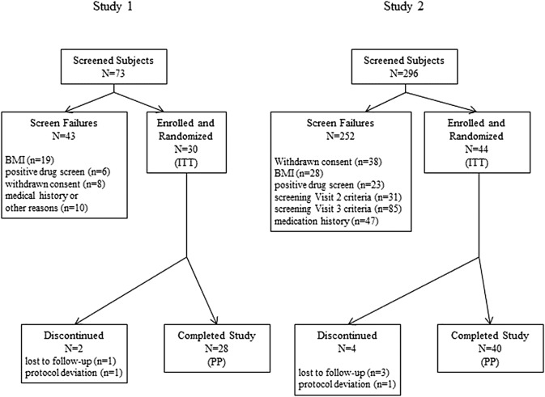
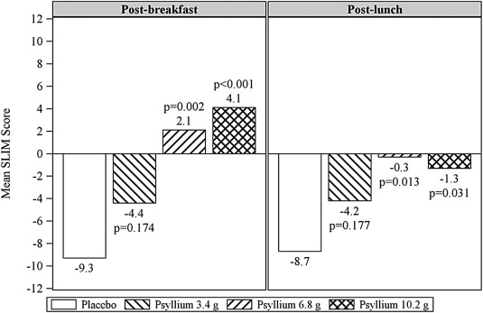
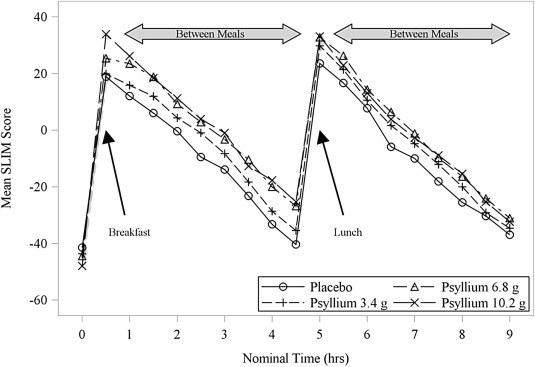
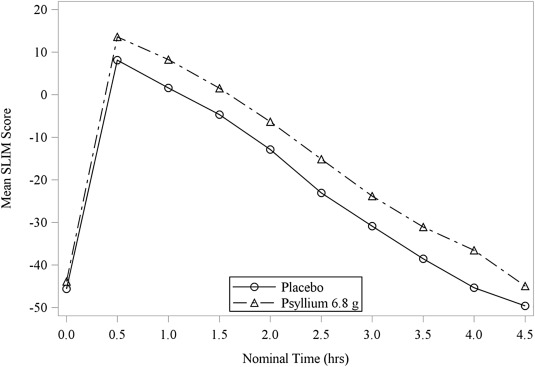
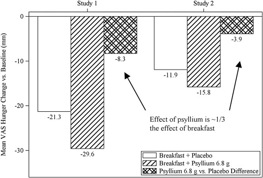

Pesquisas científicas para os componentes da fórmula de TestoBoost:
Propriedades de Spirulina sobre Obesidade, Saciedade Alimentar e Redução de Colesterol e Gordura
Propriedades de saúde de Spirulina spp.
(OBS: Documento completo em: http://aveclick.com/path/out.php)
Ambrosi, M.A.1; Reinehr, C.O.1; Bertolin, T.E.1; Costa, J.A.V.2; Colla, L.M.1*
1 - Laboratório de Fermentações, Curso de Farmácia, Universidade de Passo Fundo, UPF, Passo Fundo, RS, Brasil.
2 - Laboratório de Engenharia Bioquímica, Curso de Engenharia de Alimentos,
Universidade Federal do Rio Grande, FURG, Rio Grande, RS, Brasil.
*Autor correspondente: Luciane Maria Colla - Curso de Farmácia -
Laboratório de Fermentações - Universidade de Passo Fundo, UPF -
Campus I, km 171 – Bairro São José - Caixa Postal 611, CEP: 99001-970 -
Passo Fundo - RS, Brasil - Telefone: (54) 3316-8490 - e-mail: lmcolla@upf.br
RESUMO
Espécies de Spirulina têm sido utilizadas mundialmente na alimentação humana e animal, assim como na obtenção de aditivos utilizados em formas farmacêuticas e alimentos.
Esta bactéria é uma fonte rica em proteínas, vitaminas, aminoácidos essenciais, minerais, ácidos graxos poli-insaturados e outros nutrientes, sendo seu principal uso como suplemento alimentar.
As propriedades nutricionais de Spirulina spp. têm sido relacionadas com possíveis atividades terapêuticas, caracterizando o microrganismo no âmbito dos alimentos funcionais e nutracêuticos.
A ação de Spirulina spp. é comprovada a nível experimental ‘in vivo’ e ‘in vitro’, verificando-se sua efetividade na inibição da replicação de alguns vírus, na ação citostática e citotóxica no tratamento de câncer, na diminuição dos lipídios e da glicose no sangue e da pressão sangüínea, na redução de peso em obesos, no aumento da população de microrganismos da flora intestinal, na melhoria da resposta imunológica, na proteção renal contra metais pesados e fármacos, além de apresentar atividade rádio - protetora e de ser eficiente na desnutrição, aumentando a absorção de minerais.
Dados da literatura permitem concluir que biomassa de Spirulina spp., além de ser um excelente suplemento alimentar, é uma fonte potencial no tratamento de diversas enfermidades, constituindo uma alternativa eficiente para o desenvolvimento de produtos nutracêuticos.
Palavras-chave: Spirulina spp.; nutracêutico; câncer; obesidade, hiperlipidemia; diabetes; desnutrição.
INTRODUÇÃO
O gênero bacteriano Spirulina é uma Cyanobacterium (Castenholz et al., 2001). Anteriormente Cyanobacterium era classificada como Cyanophyta ou grupo das algas verde-azuladas (Tortora, 2007).
O gênero Spirulina apresenta diversas espécies, dentre elas S. platensis, S. máxima, S. fusiformis (Vonshak, 1997) e S. major (Karam & Soccol, 2007). As espécies S. platensis e S. maxima são as mais estudadas para uso na alimentação humana (Richmond, 1990; Vonshak, 1997) por apresentarem perfil nutricional que as torna ideal como suplemento alimentar, pois substituem satisfatoriamente as fontes artificiais de nutrientes, por combinar diversos constituintes de maneira equilibrada.
Entre estes constituintes se incluem proteínas, vitaminas do complexo B, minerais, proteínas de alta qualidade, antioxidantes β-caroteno e vitamina E. A presença de ácidos graxos poli-insaturados, especialmente o ácido gama linolênico é variável para as duas espécies (S. platensis e S. máxima), sendo esta uma das formas de caracterização e identificação das espécies, como relatado por Colla et al. (2004).
A presença ou não destes compostos, além da presença dos antioxidantes e vitaminas, permite que a microalga seja utilizada também para fins terapêuticos.
A habilidade da Spirulina spp. em combater vírus, câncer, desnutrição, diabetes, hipercolesterolemia (elevação patológica da taxa de colesterol no sangue - células e plasma - , um dos fatores da obesidade) e outros, além de proporcionar melhorias na saúde como um todo, destaca sua utilização como nutracêutico e desperta o interesse no seu emprego como uma fonte farmacêutica em potencial.
Entretanto, as pesquisas realizadas com Spirulina spp. encontram-se dispersas e as informações disponíveis, muitas vezes não são confiáveis. Sendo assim, objetivou-se realizar uma revisão de literatura, incluindo dados de nosso grupo de pesquisa, a fim de reunir os dados existentes sobre os efeitos terapêuticos desse microrganismo, caracterizando sua utilização como um nutracêutico.
PROPRIEDADES NUTRACÊUTICAS DA SPIRULINA
Os alimentos funcionais e os nutracêuticos comumente têm sido considerados sinônimos, no entanto, os alimentos funcionais devem estar na forma de alimento comum, serem consumidos como parte da dieta e produzir benefícios específicos à saúde, tais como a redução do risco de diversas doenças e a manutenção do bem-estar físico e mental (Moraes & Colla, 2006).
A propriedade nutracêutica é a qualidade de um alimento ou de um ingrediente extraído de um alimento que proporciona benefícios médicos e de saúde, compreendendo a prevenção e/ou o tratamento de doenças.
Tais produtos podem abranger desde os nutrientes isolados, suplementos dietéticos na forma de cápsulas e dietas até os produtos beneficamente projetados, produtos herbais e alimentos processados tais como cereais, sopas e bebidas (Kwak & Jukes, 2001; Andlauer & Fürst, 2002; Hungenholtz & Smid, 2002; Roberfroid, 2002).
Os ingredientes funcionais ou nutracêuticos podem ser classificados em grupos tais como: probióticos e prebióticos, alimentos sulfurados e nitrogenados, pigmentos e vitaminas, compostos fenólicos, ácidos graxos poliinsaturados e fibras (Moraes & Colla, 2006).
Certas características da Spirulina sugerem aplicações clínicas, sendo que muitos testes revelaram os efeitos terapêuticos desse microrganismo em pacientes acometidos de diversas doenças (Richmond, 1990).
Efeitos na Hiperlipidemia
A hiperlipidemia se caracteriza por uma série de distúrbios ocasionados pelo excesso de substâncias como colesterol, triacilgliceróis e lipoproteínas (Gordura) no plasma sangüíneo, sendo um importante fator de risco no desenvolvimento de aterosclerose e de doenças cardíacas e demais complicações advindas do excesso de gordura/colesterol circulante.
As lipoproteínas presentes no sangue são: VLDL (lipoproteínas de densidade muito baixa), LDL (lipoproteínas de baixa densidade) e IDL (lipoproteínas de densidade intermediária).
Os quilomícrons também são classificados como lipoproteínas e são compostos por triacilgliceróis, colesterol e proteína. Há também lipoproteínas de alta densidade (HDL) que estão inversamente relacionadas aos riscos de doenças cardíacas e, portanto, são conhecidas como fatores “anti-risco”. A hiperlipidemia pode ser resultado de um distúrbio genético, de outras condições clínicas ou de influências ambientais (incuindo hábitos alimentares), ou uma conseqüência de uma combinação destes fatores (Brunton et al., 2006).
O primeiro relato de redução de colesterol sérico pela ingestão de S. platensis (spirulina) foi feito em ratos por Devi & Venkataraman (1983). Desde então, diversos pesquisadores confirmaram esta descoberta em experimentos com seres humanos e animais.
Em estudo feito por Kato et al. (1984) em ratos, os níveis de colesterol total e fosfolipídios séricos foram aumentados através de uma dieta contendo 1% de colesterol. Estes níveis elevados foram claramente reduzidos com a introdução de 16% de S. platensis (spirulina) à dieta anterior.
Os resultados indicaram que esta microalga (spirulina) pode prevenir a hipercolesterolemia (altas taxas de gordura e colesterol) e a aterosclerose (Kato et al., 1984; Belay et al., 1993).
O único estudo em humanos foi realizado por Nayaka et al. (1988), que utilizaram 30 homens com hiperlipidemia e hipertensão suaves, divididos em dois grupos experimentais, A e B. Aos indivíduos do grupo A, administrou-se 4,2 g/dia de Spirulina e aos indivíduos do grupo B, a mesma quantidade nas primeiras quatro semanas, observando-se estes indivíduos nas quatro semanas seguintes à última administração. Nenhum dos indivíduos mudou sua dieta, a não ser pela adição de Spirulina. Os resultados mostraram redução da LDL nos indivíduos do grupo A, após oito semanas. Além disso, o índice aterogênico (importante marcador prognóstico de doença cardiovascular) diminuiu nestes indivíduos, passadas quatro semanas.
A LDL também reduziu após quatro semanas nos indivíduos do grupo B, tendo aumentado no momento em que a administração de Spirulina foi cessada (Iwata et al., 1990; Belay et al., 1993). Resultados semelhantes foram encontrados por Parikh et al. (2001), administrando-se 2 g/dia de Spirulina, durante dois meses.
Em pesquisa realizada por nosso grupo (Colla et al., 2008), quando se induziu coelhos a hipercolesterolemia através de dieta rica em colesterol e avaliaram-se os efeitos da suplementação com S. platensis medindo os níveis de colesterol sérico total, de triacilgliceróis e de HDL ao início do tratamento e após 30 e 60 dias, concluiu-se que os níveis de colesterol sérico foram reduzidos e os níveis de HDL foram aumentados com a suplementação. Os níveis de triacilgliceróis não apresentaram redução significativa.
Sendo assim, os componentes antioxidantes existentes na Spirulina spp. exercem uma importante função na manutenção da hiperlipidemia, sendo que impedem o desenvolvimento e o agravamento de complicações decorrentes desta.
Efeitos na Obesidade
Segundo Nunes et al. (1998), a definição clássica de obesidade é o acúmulo excessivo de tecido adiposo no organismo, sendo uma doença de suscetibilidade genética, com forte influência ambiental (hábitos, inclusive os alimentares), na qual diversos mecanismos metabólicos se encontram alterados, favorecendo um balanço energético positivo e o ganho de peso.
Em estudo realizado por Becker et al. (1986) constatou-se que uma dieta suplementada com 2,8 g de Spirulina, três vezes ao dia durante quatro semanas, resultou em redução do peso corporal de pacientes ambulatoriais obesos.
Tal efeito está relacionado com o aumento da atividade da lipase lipoprotéica (LPL), já que esta hidrolisa os triacilgliceróis retirando os ácidos graxos dos quilomícrons, e também atua sobre o VLDL (Nelson, 2002).
A LPL é a principal enzima no processo de hidrólise dos triacilgliceróis circulantes e atua na modulação das reservas de gordura (Dâmaso & Nascimento, 1998).
Outro mecanismo associado à redução de peso proporcionada pela Spirulina é o efeito da proteína na saciedade.
Segundo alguns autores, a elevação do nível de aminoácidos plasmáticos, observada após a ingestão de proteínas (spirulina, no contexto deste estudo), estimula a liberação de hormônios anorexígenos e insulina, os quais irão atuar sobre o centro da saciedade, resultando na redução do apetite (Lang et al., 1998; Paiva et al., 2007).
CONCLUSÃO
A Spirulina e os seus componentes possuem uma diversidade de atividades nutricionais e terapêuticas que fazem dela, além de um excelente suplemento alimentar, uma fonte potencial para emprego na prevenção e no tratamento de várias enfermidades, como a obesidade.
REFERÊNCIAS
Alonso DL, Maroto FG. Plants as ‘chemical factories’ for the production of polyunsaturated fatty acids. Biotechnol Adv 2000; 18:481-97.
Andlauer W, Fürst P. Nutraceuticals: a piece of history, present status and outlook. Food Res Int 2002; 35:171-6.
Ayehunie S, Belay A, Baba TW, Ruprecht RM. Inhibition of HIV-1 replication by an aqueous extract of Spirulina platensis. J Acquir Immune Defic Syndr Hum Retrovirol 1998; 18(1):7-12.
Becker EW, Jakober B, Luft D, Schmilling RW. Clinical and biochemical evaluations of Spirulina with regard to its application in the treatment of obesity. Nutr Rep Int 1986; 33(4):565.
Belay A, Ota Y, Miyakawa K, Shimamatsu H. Current knowledge on potential health benefits of Spirulina. J Appl Phycol 1993; 5:235-41.
Brasil. Agência Nacional de Vigilância Sanitária. VII Lista dos novos ingredientes aprovados – Comissões Tecnocientíficas de Assessoramento em Alimentos Funcionais e Novos Alimentos. [08 mai 2008].
Brunton LL, Lazo JS, Parker KL, editors. Goodman & Gilman: as bases farmacológicas da terapêutica. 11.ed. Rio de Janeiro: McGraw Hill; 2006. 1821p.
Castenholz RW, Rippka R, Herdaman M, Wilmotte A. Form-genus XIII, Spirulina Turpin 1829 ex Gomont 1892.
In: Boone DR, Castenholz RW, editors. Bergey’s manual of systematic bacteriology. 2nd.ed. New York: Springer-Velag, 2001. v.1, p.557-9
Cecil RL, Goldman L, Ausiello D, editores. Cecil: tratado de medicina interna. 22.ed. Rio de Janeiro: Elsevier; 2005a. v.1.
Cecil RL, Goldman L, Ausiello D, editores. Cecil: tratado de medicina interna. 22.ed. Rio de Janeiro: Elsevier; 2005b. v.2.
Colla LM, Bertolin TE, Costa JV. Fatty acids profile of Spirulina platensis grown under different temperatures and nitrogen concentrations. Z Naturforsch 2004; 59c:55-9.
Colla LM, Furlong EB, Costa, JAV. Antioxidant Properties of Spirulina (Arthospira) platensis Cultivated Under Different Temperatures and Nitrogen Regimes. Braz Arch Biol Technol 2007a; 50(1):161-7.
Colla LM, Reinehr CO, Reichert C, Costa JAV. Production of biomass and nutraceutical compounds by Spirulina platensis under different temperature and nitrogen regimes. Bioresour Technol.2007b; 98:1489-93.
Colla LM, Muccillo-Baisch AL, Costa JV. Spirulina platensis effects on the levels of total cholesterol, HDL and triacylglycerols in rabbits fed with a hypercholesterolemic diet. Braz Arch Biol Technol 2008; 51(2):405-11.
Dainippon Ink & Chemicals, Tokyo Kenkyukai, inventors and assignee. Antitumoral agents containing phycobilin – also used to treat ulcers and hemorrhoidal bleeding. JP patent 58065216 A 830418. 1983 April 18. 6p.
Dâmaso A. Obesidade. Rio de Janeiro: Guanabara Koogan S.A., 2003. 590p.
Dâmaso AR, Nascimento CMO. Efeitos do exercício realizado durante o ciclo reprodutivo sobre o metabolismo lipídico: análise de estudos utilizando animais experimentais. Rev Paul Ed Fís 1998; 12(1):54-70.
De Caire GZ, de Cano MS, de Mule CZ, Steyerthal N, Piantanida M. Effect of Spirulina platensis on glucose, uric acid and cholesterol levels in the blood of rodents. Int J Exp Bot 1995; 57:93-6.
Devi MA, Venkataraman LV. Hypocholestemic effect of blue-green algae Spirulina platensis in albino rats. Nutr Rep Int 1983; 28:519-30.
DRI. Dietary Reference Intake. Dietary Reference Intakes for Vitamin C, Vitamin E, Selenium, and Carotenoids.
Institute of Medicine (IOM), 2000. Disponível em URL: http://aveclick.com/path/out.php. [24 mar 2008]
Estrada JE, Bescós P, Villar Del Fresno AM. Antioxidant activity of different fractions of Spirulina platensis protean extract. Il Farmaco 2001; 56:497-500.
Fukino H, Takagi Y, Yamane Y. Effect of Spirulina on the renal toxicity induced by inorganic mercury and cisplatin. Eisei Kagaku 1990; 36:5.
Harrison TR, Kasper DL, editores. Harrison: medicina interna. 16.ed. Rio de Janeiro: McGraw Hill; 2006. v.1.
Hayashi K, Hayashi T, Kojima I. A natural sulfated polysaccharide, Calcium Spirulan, isolated from Spirulina platensis: in vitro and ex vivo evaluation of anti-Herpes simplex virus and anti-human immunodeficiency virus activities. AIDS Res Human Retrovirusses 1996a; 12:1463-71.
Hayashi T, Hayashi K, Maeda M, Kojima I. Calcium Spirulan, an inhibitor of enveloped virus replication, from a blue-green alga Spirulina platensis. J Nat Prod 1996b; 59(1):83-7.
Henrikson, R. Microalga Spirulina: superalimento del futuro. Barcelona: Ediciones Urano S.A., 1995.
Hosoyamada Y, Takai T, Kato T. Effects of water-soluble and insoluble fractions of Spirulina on serum lipid components and glucose tolerance in rats. J Jpn Soc Nutr Food Sci 1991; 44:273-7.
Hungenholtz J, Smid EJ. Nutraceutical production with food-grade microorganisms. Curr Opin Biotechnol 2002; 13:497-507.
Iwata K, Inayama T, Kato, T. Effects of Spirulina platensis on plasma lipoprotein lipase activity in fructose induced hiperlipidemic rats. J Nutr Sci Vitaminol 1990; 36:165-71.
Karam LM, Soccol CR. Efeito da temperatura e pH no cultivo de Spirulina major. Arq Ciên Vet Zool 2007; 10(1):5-7.
Kato T, Takemoto K, Katayama H, Kuwabara Y. Effects of Spirulina platensis on dietary hypercholesterolemia in rats. J Jpn Soc Nutr Food Sci 1984; 37:323-32.
Kwak N, Jukes DJ. Functional foods. Part 1: the development of a regulatory concept. Food Control 2001; 12:99-107.
Lang V, Bellisle F, Oppert JM, Craplet C, Bornet FRJ, Slama G. Satiating effect of proteins in healthy subjects: a comparison of egg albumin, casein, gelatin, soy protein, pea protein, and wheat gluten. Am J Clin Nutr 1998; 67:197.
Loseva LP, Dardynskaya IV. Spirulina: a natural sorbent of radionucleides. Research Institute of Radiation Medicine, Minsk, Belarus. 6th.International Congress of Applied Algology; Sep 1993; Czech Republic, Belarus, 1993. Disponível em URL: http://aveclick.com/path/out.php. [04 jul 2008]
Mani S, Iyer U, Subramanian S. Studies on the effect of Spirulina supplementation in control of diabetes mellitus.
In: Subramanian G et al., eds. Cyanobacterial biotechnology. Enfield, USA: Science Publishers Inc; 1998. p.301-4.
Mathew B, Sankaranarayanan R, Nair PP, Varghese C, Somanathan T, Amma BP, Amma NS, Nair MK. Evaluation of chemoprevention of oral cancer with Spirulina fusiformis. Nutr Cancer 1995; 24(2):197-202.
Miranda MS, Cintra RG, Barros SBM, Mancini-Filho J. Antioxidant activity of the microalga Spirulina maxima. Braz J Med Biol Res 1998; 31:1075-9.
Moraes F, Colla LM. Alimentos funcionais e nutracêuticos: definições, legislação e benefícios à saúde. Rev Eletrôn Farm 2006; 3(2): 109-22.
Moriel P, Rodrigues D, Abdalla DSP, Bertolami MC, Andrade PM. Antioxidantes e oxidabilidade da LDL em pacientes hiperlipidêmicos. Rev Bras Anal Clin 1998; 30(4):176-80.
Nayaka N, Homma Y, Goto Y. Cholesterol lowering effect of Spirulina. Nutr Rep Int 1988; 37:1329–7.
Nelson DL. Lehninger: princípios de bioquímica. 3.ed. São Paulo: Sarvier; 2002. 975p.
Nunes MAA, Appolinario JC, Abuchaim ALG, Coutinho W, eds. Transtornos alimentares e obesidade. Porto Alegre: Artmed; 1998. 215p.
Paiva AC, Alfenas RCG, Bressan J. Efeitos da alta ingestão diária de proteínas no metabolismo. Rev Bras Nutr Clin 2007; 22(1):83-8.
Parades-Carbajal MC, Torres-Duran PV, Diaz-Zagoya JC, Mascher D, Juarez-Oropeza MA. Effects of dietary Spirulina maxima on endothelium dependent vasomotor responses of rat aortic rings. Life Sci 1997; 61:211-9.
Parikh P, Mani U, Iyer U. Role of Spirulina in the control of glycemia and lipidemia in type 2 diabetes mellitus. J Med Food 2001; 4:193-9.
Pelczar MJ, Chan ECS, Krieg NR. Microbiologia: conceitos e aplicações. 2.ed. São Paulo: Makron Books; 2005. v. 2.
Pérez LV, Abraham CM, Leyva IT, Ferrer BBS, Suárez VM, Segura MS. Efecto in vitro de la Spirulina sobre la respuesta inmune. Rev Cubana Hematol Inmunol Hemoter 2002; 18(2). [periódico on-line] Disponível em URL: http://aveclick.com/path/out.php [10 mar 2008].
Qishen P, Baojiang G, Kolman A. Radioprotective effect of extract from Spirulina platensis in mouse bone marrow cells studied by using the micronucleus test. Toxicol Lett 1989; 48(2):165-9.
Richmond A. Handbook of microalgal mass culture. Boston: CRC Press; 1990.
Roberfroid M. Functional food concept and its application to prebiotics. Dig Liver Dis 2002; 34(2):105-10.
Schwartz J, Shklar G, Reid S, And Trickler D. Prevention of experimental oral cancer by extracts of Spirulina-Dunaliella algae. Nutr Cancer 1988; 11:127-34.
Schwartz J, Shklar G, Suda D. Inhibition of experimental oral carcinogenesis by topical beta carotene. Carcinogenesis 1986; 7(5):711-5.
Seshadri CV. Large-scale nutritional supplementation with Spirulina alga. All India Coordinated Project on Spirulina. Shri Amm Murugappa Chettiar Research Center (MCRC). Madras, India, 1993.
Sharon J. Imunologia básica. Rio de Janeiro: Guanabara Koogan; 2000. 267p.
Simpore J, Kabore F, Zongo F, Dansou D, Bere A, Pignatelli S, Biondi DM, Ruberto G, Musumeci S. Nutrition rehabilitation of undernourished children utilizing Spiruline and Misola. Nutr J 2006; 5:3.
Souza FT, Margarites AC, Colla LM, Costa JAV, Bertolin TE. Avaliação do potencial antioxidante da ficocianina em sistema lipídico óleo de soja e azeite de oliva. Alim Nutr 2006; 17(3):287-91.
Torres-Duran PV, Ferreira-Hermosillo A, Juarez-Oropeza MA. Antihyperlipemic and antihypertensive effects of Spirulina maxima in an open sample of Mexican population: a preliminary report. Lipids Health Dis 2007; 6:33.
Tortora GJ. Microbiology: an introduction. 9th.ed. San Francisco.
Pearson Benjamin Cummings; 2007. The prokaryotes: domains bacteria and archae; 328-9 Tsuchihashi N, Watanabe T, Takai Y. Effect of Spirulina platensis on caecum content in rats. Bull Chiba Hyg Coll 1987; 5(2):27-30.
Von Der Weid D, Dillon JC, Falquet J. Malnutrition: a silent massacre. Geneve: Antenna Technology; 2000. 13p. Vonshak A. Spirulina platensis (Arthrospira): physiology, cell-biology and biotechnology. London: Taylor & Francis; 1997.
Yamane Y. The effect of Spirulina on nephrotoxicity in rats. In: Annual Symposium of the Pharmaceutical Society of Japan; 1988 Apr 15; Chiba University, Japan. 1988. Disponível em URL: http://aveclick.com/path/out.php [04 jul 2008].
Yonghuang W. The study on curative effect of zinc containing Spirulina for zinc deficient children. Capital Medical College, Beijing. In: 5º International Phycological Congress;
June 1994; Qingdao, China, 1994. Disponível em URL: http://aveclick.com/path/out.php [04 jul 2008].
Propriedades de Spirulina sobre Diabetes Mellitus
(OBS: Documento completo em: http://aveclick.com/path/out.php)
Ambrosi, M.A.1; Reinehr, C.O.1; Bertolin, T.E.1; Costa, J.A.V.2; Colla, L.M.1*
1 - Laboratório de Fermentações, Curso de Farmácia, Universidade de Passo Fundo, UPF, Passo Fundo, RS, Brasil.
2 - Laboratório de Engenharia Bioquímica, Curso de Engenharia de Alimentos,
Universidade Federal do Rio Grande, FURG, Rio Grande, RS, Brasil.
*Autor correspondente: Luciane Maria Colla - Curso de Farmácia -
Laboratório de Fermentações - Universidade de Passo Fundo, UPF -
Campus I, km 171 – Bairro São José - Caixa Postal 611, CEP: 99001-970 -
Passo Fundo - RS, Brasil - Telefone: (54) 3316-8490 - e-mail: lmcolla@upf.br
RESUMO
Espécies de Spirulina têm sido utilizadas mundialmente na alimentação humana e animal, assim como na obtenção de aditivos utilizados em formas farmacêuticas e alimentos.
Esta bactéria é uma fonte rica em proteínas, vitaminas, aminoácidos essenciais, minerais, ácidos graxos poli-insaturados e outros nutrientes, sendo seu principal uso como suplemento alimentar.
As propriedades nutricionais de Spirulina spp. têm sido relacionadas com possíveis atividades terapêuticas, caracterizando o microrganismo no âmbito dos alimentos funcionais e nutracêuticos.
A ação de Spirulina spp. é comprovada a nível experimental ‘in vivo’ e ‘in vitro’, verificando-se sua efetividade na inibição da replicação de alguns vírus, na ação citostática e citotóxica no tratamento de câncer, na diminuição dos lipídios e da glicose no sangue e da pressão sanguínea, na redução de peso em obesos, no aumento da população de microrganismos da flora intestinal, na melhoria da resposta imunológica, na proteção renal contra metais pesados e fármacos, além de apresentar atividade rádio - protetora e de ser eficiente na desnutrição, aumentando a absorção de minerais.
Dados da literatura permitem concluir que biomassa de Spirulina spp., além de ser um excelente suplemento alimentar, é uma fonte potencial no tratamento de diversas enfermidades, constituindo uma alternativa eficiente para o desenvolvimento de produtos nutracêuticos.
Palavras-chave: Spirulina spp.; nutracêutico; câncer; hiperlipidemia; diabetes; desnutrição.
INTRODUÇÃO
O gênero bacteriano Spirulina é uma Cyanobacterium (Castenholz et al., 2001). Anteriormente Cyanobacterium era classificada como Cyanophyta ou grupo das algas verde-azuladas (Tortora, 2007).
O gênero Spirulina apresenta diversas espécies, dentre elas S. platensis, S. máxima, S. fusiformis (Vonshak, 1997) e S. major (Karam & Soccol, 2007). As espécies S. platensis e S. maxima são as mais estudadas para uso na alimentação humana (Richmond, 1990; Vonshak, 1997) por apresentarem perfil nutricional que as torna ideal como suplemento alimentar, pois substituem satisfatoriamente as fontes artificiais de nutrientes, por combinar diversos constituintes de maneira equilibrada.
Entre estes constituintes se incluem proteínas, vitaminas do complexo B, minerais, proteínas de alta qualidade, antioxidantes β-caroteno e vitamina E. A presença de ácidos graxos poli-insaturados, especialmente o ácido gama linolênico é variável para as duas espécies (S. platensis e S. máxima), sendo esta uma das formas de caracterização e identificação das espécies, como relatado por Colla et al. (2004).
A presença ou não destes compostos, além da presença dos antioxidantes e vitaminas, permite que a microalga seja utilizada também para fins terapêuticos.
A habilidade da Spirulina em combater o diabetes, vírus, câncer, desnutrição, hipercolesterolemia e outros, além de proporcionar melhorias na saúde como um todo, destaca sua utilização como nutracêutico e desperta o interesse no seu emprego como uma fonte farmacêutica em potencial.
Entretanto, as pesquisas realizadas com Spirulina spp. encontram-se dispersas e as informações disponíveis, muitas vezes não são confiáveis. Sendo assim, objetivou-se realizar uma revisão de literatura, incluindo dados de nosso grupo de pesquisa, a fim de reunir os dados existentes sobre os efeitos terapêuticos desse microrganismo, caracterizando sua utilização como um nutracêutico.
PROPRIEDADES NUTRACÊUTICAS DA SPIRULINA
Os alimentos funcionais e os nutracêuticos comumente têm sido considerados sinônimos, no entanto, os alimentos funcionais devem estar na forma de alimento comum, serem consumidos como parte da dieta e produzir benefícios específicos à saúde, tais como a redução do risco de diversas doenças e a manutenção do bem-estar físico e mental (Moraes & Colla, 2006).
A propriedade nutracêutica é a qualidade de um alimento ou de um ingrediente extraído de um alimento que proporciona benefícios médicos e de saúde, compreendendo a prevenção e/ou o tratamento de doenças.
Tais produtos podem abranger desde os nutrientes isolados, suplementos dietéticos na forma de cápsulas e dietas até os produtos beneficamente projetados, produtos herbais e alimentos processados tais como cereais, sopas e bebidas (Kwak & Jukes, 2001; Andlauer & Fürst, 2002; Hungenholtz & Smid, 2002; Roberfroid, 2002).
Os ingredientes funcionais ou nutracêuticos podem ser classificados em grupos tais como: probióticos e prebióticos, alimentos sulfurados e nitrogenados, pigmentos e vitaminas, compostos fenólicos, ácidos graxos poliinsaturados e fibras (Moraes & Colla, 2006).
Certas características da Spirulina sugerem aplicações clínicas, sendo que muitos testes revelaram os efeitos terapêuticos desse microrganismo em pacientes acometidos de diversas doenças, como o Diabetes Mellitus (Richmond, 1990).
Efeitos no Diabetes Mellitus
O diabetes mellitus é um distúrbio crônico, caracterizado pelo comprometimento do metabolismo da glicose e de outras substâncias produtoras de energia, bem como pelo desenvolvimento tardio de complicações vasculares e neuropáticas.
Independentemente de sua etiologia, a doença está associada a um defeito hormonal comum, isto é, a deficiência de insulina, que pode ser total, parcial ou relativa, o que levará à hiperglicemia.
A ausência dos efeitos da insulina desempenha um papel primário nos transtornos metabólicos associados ao diabetes, e, por sua vez, a hiperglicemia desempenha um importante papel nas complicações relacionadas com a doença (Cecil et al., 2005b).
Segundo a Associação Americana de Diabetes e a Organização Mundial da Saúde, o diabetes mellitus pode ser conceituado como o aumento da concentração normal de glicose no sangue e pode ser classificado em: diabetes mellitus tipo I, diabetes mellitus tipo II, outros tipos especí- ficos de diabetes associados a condições clínicas ou síndromes identificáveis e diabetes mellitus gestacional (Cecil et al., 2005b; Dâmaso., 2003).
Hosoyamada et al. (1991), estudaram uma fração hidrossolúvel de Spirulina, a qual foi efetiva em diminuir os níveis de glicose sérica em jejum, enquanto que a fração lipossolúvel diminuiu os estoques de glicose. Resultados similares foram encontrados por De Caire et al. (1995).
Sabe-se que a ficocianina é facilmente extraída da Spirulina em sistema aquoso, sendo assim, a fração hidrossolúvel é rica neste componente. Por outro lado, a fração lipossolúvel é rica em ácidos graxos poli-insaturados, já que estes são facilmente extraídos em sistemas graxos.
Dessa forma, a diminuição dos níveis de glicose sérica e a redução dos estoques de glicose podem ser atribuídas a ficocianina e aos ácidos graxos poliinsaturados, respectivamente. Em estudo clínico realizado em humanos envolvendo 15 diabéticos, um decréscimo da glicose sérica dos pacientes em jejum foi observado após 21 dias de suplementação de 2 g/dia de Spirulina (Mani et al., 1998).
Em ensaio clínico randomizado, 25 indivíduos com diabetes mellitus tipo II foram distribuídos aleatoriamente para receber Spirulina ou para formar o grupo controle. Dois meses de suplementação com Spirulina, na dosagem de 2 g/dia, resultou em uma sensível redução da glicemia de jejum e da glicemia pós-prandial. Uma redução significativa do nível de hemoglobina glicosilada também foi observado, indicando melhoria de longo prazo na regulação da glicemia (Parikh et al., 2001).
CONCLUSÃO
A Spirulina e os seus componentes possuem uma diversidade de atividades nutricionais e terapêuticas que fazem dela, além de um excelente suplemento alimentar, uma fonte potencial para emprego na prevenção e no tratamento de várias enfermidades, como o Diabetes Mellitus.
REFERÊNCIAS
Alonso DL, Maroto FG. Plants as ‘chemical factories’ for the production of polyunsaturated fatty acids. Biotechnol Adv 2000; 18:481-97.
Andlauer W, Fürst P. Nutraceuticals: a piece of history, present status and outlook. Food Res Int 2002; 35:171-6.
Ayehunie S, Belay A, Baba TW, Ruprecht RM. Inhibition of HIV-1 replication by an aqueous extract of Spirulina platensis. J Acquir Immune Defic Syndr Hum Retrovirol 1998; 18(1):7-12.
Becker EW, Jakober B, Luft D, Schmilling RW. Clinical and biochemical evaluations of Spirulina with regard to its application in the treatment of obesity. Nutr Rep Int 1986; 33(4):565.
Belay A, Ota Y, Miyakawa K, Shimamatsu H. Current knowledge on potential health benefits of Spirulina. J Appl Phycol 1993; 5:235-41.
Brasil. Agência Nacional de Vigilância Sanitária. VII Lista dos novos ingredientes aprovados – Comissões Tecnocientíficas de Assessoramento em Alimentos Funcionais e Novos Alimentos. [08 mai 2008].
Brunton LL, Lazo JS, Parker KL, editors. Goodman & Gilman: as bases farmacológicas da terapêutica. 11.ed. Rio de Janeiro: McGraw Hill; 2006. 1821p.
Castenholz RW, Rippka R, Herdaman M, Wilmotte A. Form-genus XIII, Spirulina Turpin 1829 ex Gomont 1892.
In: Boone DR, Castenholz RW, editors. Bergey’s manual of systematic bacteriology. 2nd.ed. New York: Springer-Velag, 2001. v.1, p.557-9
Cecil RL, Goldman L, Ausiello D, editores. Cecil: tratado de medicina interna. 22.ed. Rio de Janeiro: Elsevier; 2005a. v.1.
Cecil RL, Goldman L, Ausiello D, editores. Cecil: tratado de medicina interna. 22.ed. Rio de Janeiro: Elsevier; 2005b. v.2.
Colla LM, Bertolin TE, Costa JV. Fatty acids profile of Spirulina platensis grown under different temperatures and nitrogen concentrations. Z Naturforsch 2004; 59c:55-9.
Colla LM, Furlong EB, Costa, JAV. Antioxidant Properties of Spirulina (Arthospira) platensis Cultivated Under Different Temperatures and Nitrogen Regimes. Braz Arch Biol Technol 2007a; 50(1):161-7.
Colla LM, Reinehr CO, Reichert C, Costa JAV. Production of biomass and nutraceutical compounds by Spirulina platensis under different temperature and nitrogen regimes. Bioresour Technol.2007b; 98:1489-93.
Colla LM, Muccillo-Baisch AL, Costa JV. Spirulina platensis effects on the levels of total cholesterol, HDL and triacylglycerols in rabbits fed with a hypercholesterolemic diet. Braz Arch Biol Technol 2008; 51(2):405-11.
Dainippon Ink & Chemicals, Tokyo Kenkyukai, inventors and assignee. Antitumoral agents containing phycobilin – also used to treat ulcers and hemorrhoidal bleeding. JP patent 58065216 A 830418. 1983 April 18. 6p.
Dâmaso A. Obesidade. Rio de Janeiro: Guanabara Koogan S.A., 2003. 590p.
Dâmaso AR, Nascimento CMO. Efeitos do exercício realizado durante o ciclo reprodutivo sobre o metabolismo lipídico: análise de estudos utilizando animais experimentais. Rev Paul Ed Fís 1998; 12(1):54-70.
De Caire GZ, de Cano MS, de Mule CZ, Steyerthal N, Piantanida M. Effect of Spirulina platensis on glucose, uric acid and cholesterol levels in the blood of rodents. Int J Exp Bot 1995; 57:93-6.
Devi MA, Venkataraman LV. Hypocholestemic effect of blue-green algae Spirulina platensis in albino rats. Nutr Rep Int 1983; 28:519-30.
DRI. Dietary Reference Intake. Dietary Reference Intakes for Vitamin C, Vitamin E, Selenium, and Carotenoids.
Institute of Medicine (IOM), 2000. Disponível em URL: http://aveclick.com/path/out.php. [24 mar 2008]
Estrada JE, Bescós P, Villar Del Fresno AM. Antioxidant activity of different fractions of Spirulina platensis protean extract. Il Farmaco 2001; 56:497-500.
Fukino H, Takagi Y, Yamane Y. Effect of Spirulina on the renal toxicity induced by inorganic mercury and cisplatin. Eisei Kagaku 1990; 36:5.
Harrison TR, Kasper DL, editores. Harrison: medicina interna. 16.ed. Rio de Janeiro: McGraw Hill; 2006. v.1.
Hayashi K, Hayashi T, Kojima I. A natural sulfated polysaccharide, Calcium Spirulan, isolated from Spirulina platensis: in vitro and ex vivo evaluation of anti-Herpes simplex virus and anti-human immunodeficiency virus activities. AIDS Res Human Retrovirusses 1996a; 12:1463-71.
Hayashi T, Hayashi K, Maeda M, Kojima I. Calcium Spirulan, an inhibitor of enveloped virus replication, from a blue-green alga Spirulina platensis. J Nat Prod 1996b; 59(1):83-7.
Henrikson, R. Microalga Spirulina: superalimento del futuro. Barcelona: Ediciones Urano S.A., 1995.
Hosoyamada Y, Takai T, Kato T. Effects of water-soluble and insoluble fractions of Spirulina on serum lipid components and glucose tolerance in rats. J Jpn Soc Nutr Food Sci 1991; 44:273-7.
Hungenholtz J, Smid EJ. Nutraceutical production with food-grade microorganisms. Curr Opin Biotechnol 2002; 13:497-507.
Iwata K, Inayama T, Kato, T. Effects of Spirulina platensis on plasma lipoprotein lipase activity in fructose induced hiperlipidemic rats. J Nutr Sci Vitaminol 1990; 36:165-71.
Karam LM, Soccol CR. Efeito da temperatura e pH no cultivo de Spirulina major. Arq Ciên Vet Zool 2007; 10(1):5-7.
Kato T, Takemoto K, Katayama H, Kuwabara Y. Effects of Spirulina platensis on dietary hypercholesterolemia in rats. J Jpn Soc Nutr Food Sci 1984; 37:323-32.
Kwak N, Jukes DJ. Functional foods. Part 1: the development of a regulatory concept. Food Control 2001; 12:99-107.
Lang V, Bellisle F, Oppert JM, Craplet C, Bornet FRJ, Slama G. Satiating effect of proteins in healthy subjects: a comparison of egg albumin, casein, gelatin, soy protein, pea protein, and wheat gluten. Am J Clin Nutr 1998; 67:197.
Loseva LP, Dardynskaya IV. Spirulina: a natural sorbent of radionucleides. Research Institute of Radiation Medicine, Minsk, Belarus. 6th.International Congress of Applied Algology; Sep 1993; Czech Republic, Belarus, 1993. Disponível em URL: http://aveclick.com/path/out.php. [04 jul 2008]
Mani S, Iyer U, Subramanian S. Studies on the effect of Spirulina supplementation in control of diabetes mellitus.
In: Subramanian G et al., eds. Cyanobacterial biotechnology. Enfield, USA: Science Publishers Inc; 1998. p.301-4.
Mathew B, Sankaranarayanan R, Nair PP, Varghese C, Somanathan T, Amma BP, Amma NS, Nair MK. Evaluation of chemoprevention of oral cancer with Spirulina fusiformis. Nutr Cancer 1995; 24(2):197-202.
Miranda MS, Cintra RG, Barros SBM, Mancini-Filho J. Antioxidant activity of the microalga Spirulina maxima. Braz J Med Biol Res 1998; 31:1075-9.
Moraes F, Colla LM. Alimentos funcionais e nutracêuticos: definições, legislação e benefícios à saúde. Rev Eletrôn Farm 2006; 3(2): 109-22.
Moriel P, Rodrigues D, Abdalla DSP, Bertolami MC, Andrade PM. Antioxidantes e oxidabilidade da LDL em pacientes hiperlipidêmicos. Rev Bras Anal Clin 1998; 30(4):176-80.
Nayaka N, Homma Y, Goto Y. Cholesterol lowering effect of Spirulina. Nutr Rep Int 1988; 37:1329–7.
Nelson DL. Lehninger: princípios de bioquímica. 3.ed. São Paulo: Sarvier; 2002. 975p.
Nunes MAA, Appolinario JC, Abuchaim ALG, Coutinho W, eds. Transtornos alimentares e obesidade. Porto Alegre: Artmed; 1998. 215p.
Paiva AC, Alfenas RCG, Bressan J. Efeitos da alta ingestão diária de proteínas no metabolismo. Rev Bras Nutr Clin 2007; 22(1):83-8.
Parades-Carbajal MC, Torres-Duran PV, Diaz-Zagoya JC, Mascher D, Juarez-Oropeza MA. Effects of dietary Spirulina maxima on endothelium dependent vasomotor responses of rat aortic rings. Life Sci 1997; 61:211-9.
Parikh P, Mani U, Iyer U. Role of Spirulina in the control of glycemia and lipidemia in type 2 diabetes mellitus. J Med Food 2001; 4:193-9.
Pelczar MJ, Chan ECS, Krieg NR. Microbiologia: conceitos e aplicações. 2.ed. São Paulo: Makron Books; 2005. v. 2.
Pérez LV, Abraham CM, Leyva IT, Ferrer BBS, Suárez VM, Segura MS. Efecto in vitro de la Spirulina sobre la respuesta inmune. Rev Cubana Hematol Inmunol Hemoter 2002; 18(2). [periódico on-line] Disponível em URL: http://aveclick.com/path/out.php [10 mar 2008].
Qishen P, Baojiang G, Kolman A. Radioprotective effect of extract from Spirulina platensis in mouse bone marrow cells studied by using the micronucleus test. Toxicol Lett 1989; 48(2):165-9.
Richmond A. Handbook of microalgal mass culture. Boston: CRC Press; 1990.
Roberfroid M. Functional food concept and its application to prebiotics. Dig Liver Dis 2002; 34(2):105-10.
Schwartz J, Shklar G, Reid S, And Trickler D. Prevention of experimental oral cancer by extracts of Spirulina-Dunaliella algae. Nutr Cancer 1988; 11:127-34.
Schwartz J, Shklar G, Suda D. Inhibition of experimental oral carcinogenesis by topical beta carotene. Carcinogenesis 1986; 7(5):711-5.
Seshadri CV. Large-scale nutritional supplementation with Spirulina alga. All India Coordinated Project on Spirulina. Shri Amm Murugappa Chettiar Research Center (MCRC). Madras, India, 1993.
Sharon J. Imunologia básica. Rio de Janeiro: Guanabara Koogan; 2000. 267p.
Simpore J, Kabore F, Zongo F, Dansou D, Bere A, Pignatelli S, Biondi DM, Ruberto G, Musumeci S. Nutrition rehabilitation of undernourished children utilizing Spiruline and Misola. Nutr J 2006; 5:3.
Souza FT, Margarites AC, Colla LM, Costa JAV, Bertolin TE. Avaliação do potencial antioxidante da ficocianina em sistema lipídico óleo de soja e azeite de oliva. Alim Nutr 2006; 17(3):287-91.
Torres-Duran PV, Ferreira-Hermosillo A, Juarez-Oropeza MA. Antihyperlipemic and antihypertensive effects of Spirulina maxima in an open sample of Mexican population: a preliminary report. Lipids Health Dis 2007; 6:33.
Tortora GJ. Microbiology: an introduction. 9th.ed. San Francisco.
Pearson Benjamin Cummings; 2007. The prokaryotes: domains bacteria and archae; 328-9 Tsuchihashi N, Watanabe T, Takai Y. Effect of Spirulina platensis on caecum content in rats. Bull Chiba Hyg Coll 1987; 5(2):27-30.
Von Der Weid D, Dillon JC, Falquet J. Malnutrition: a silent massacre. Geneve: Antenna Technology; 2000. 13p. Vonshak A. Spirulina platensis (Arthrospira): physiology, cell-biology and biotechnology. London: Taylor & Francis; 1997.
Yamane Y. The effect of Spirulina on nephrotoxicity in rats. In: Annual Symposium of the Pharmaceutical Society of Japan; 1988 Apr 15; Chiba University, Japan. 1988. Disponível em URL: http://aveclick.com/path/out.php [04 jul 2008].
Yonghuang W. The study on curative effect of zinc containing Spirulina for zinc deficient children. Capital Medical College, Beijing. In: 5º International Phycological Congress;
June 1994; Qingdao, China, 1994. Disponível em URL: http://aveclick.com/path/out.php [04 jul 2008].
Propriedades de Spirulina sobre a Hipertensão Arterial
(OBS: Documento completo em: https://alfacaps.com.br/pesquisas/spirulina.pdf )
Ambrosi, M.A.1; Reinehr, C.O.1; Bertolin, T.E.1; Costa, J.A.V.2; Colla, L.M.1*
1 - Laboratório de Fermentações, Curso de Farmácia, Universidade de Passo Fundo, UPF, Passo Fundo, RS, Brasil.
2 - Laboratório de Engenharia Bioquímica, Curso de Engenharia de Alimentos,
Universidade Federal do Rio Grande, FURG, Rio Grande, RS, Brasil.
*Autor correspondente: Luciane Maria Colla - Curso de Farmácia -
Laboratório de Fermentações - Universidade de Passo Fundo, UPF -
Campus I, km 171 – Bairro São José - Caixa Postal 611, CEP: 99001-970 -
Passo Fundo - RS, Brasil - Telefone: (54) 3316-8490 - e-mail: lmcolla@upf.br
RESUMO
Espécies de Spirulina têm sido utilizadas mundialmente na alimentação humana e animal, assim como na obtenção de aditivos utilizados em formas farmacêuticas e alimentos.
Esta bactéria é uma fonte rica em proteínas, vitaminas, aminoácidos essenciais, minerais, ácidos graxos poli-insaturados e outros nutrientes, sendo seu principal uso como suplemento alimentar.
As propriedades nutricionais de Spirulina spp. têm sido relacionadas com possíveis atividades terapêuticas, caracterizando o microrganismo no âmbito dos alimentos funcionais e nutracêuticos.
A ação de Spirulina spp. é comprovada a nível experimental ‘in vivo’ e ‘in vitro’, verificando-se sua efetividade na inibição da replicação de alguns vírus, na ação citostática e citotóxica no tratamento de câncer, na diminuição dos lipídios e da glicose no sangue e da pressão sanguínea, na redução de peso em obesos, no aumento da população de microrganismos da flora intestinal, na melhoria da resposta imunológica, na proteção renal contra metais pesados e fármacos, além de apresentar atividade rádio - protetora e de ser eficiente na desnutrição, aumentando a absorção de minerais.
Dados da literatura permitem concluir que biomassa de Spirulina spp., além de ser um excelente suplemento alimentar, é uma fonte potencial no tratamento de diversas enfermidades, constituindo uma alternativa eficiente para o desenvolvimento de produtos nutracêuticos.
Palavras-chave: Spirulina spp.; nutracêutico; câncer; hiperlipidemia; diabetes; desnutrição, hipertensão arterial
INTRODUÇÃO
O gênero bacteriano Spirulina é uma Cyanobacterium (Castenholz et al., 2001). Anteriormente Cyanobacterium era classificada como Cyanophyta ou grupo das algas verde-azuladas (Tortora, 2007).
O gênero Spirulina apresenta diversas espécies, dentre elas S. platensis, S. máxima, S. fusiformis (Vonshak, 1997) e S. major (Karam & Soccol, 2007). As espécies S. platensis e S. maxima são as mais estudadas para uso na alimentação humana (Richmond, 1990; Vonshak, 1997) por apresentarem perfil nutricional que as torna ideal como suplemento alimentar, pois substituem satisfatoriamente as fontes artificiais de nutrientes, por combinar diversos constituintes de maneira equilibrada.
Entre estes constituintes se incluem proteínas, vitaminas do complexo B, minerais, proteínas de alta qualidade, antioxidantes β-caroteno e vitamina E. A presença de ácidos graxos poli-insaturados, especialmente o ácido gama linolênico é variável para as duas espécies (S. platensis e S. máxima), sendo esta uma das formas de caracterização e identificação das espécies, como relatado por Colla et al. (2004).
A presença ou não destes compostos, além da presença dos antioxidantes e vitaminas, permite que a microalga seja utilizada também para fins terapêuticos.
A habilidade da Spirulina spp. em combater diabetes, vírus, câncer, desnutrição, hipercolesterolemia, hipertensão arterial e outros, além de proporcionar melhorias na saúde como um todo, destaca sua utilização como nutracêutico e desperta o interesse no seu emprego como uma fonte farmacêutica em potencial.
Entretanto, as pesquisas realizadas com Spirulina spp. encontram-se dispersas e as informações disponíveis, muitas vezes não são confiáveis. Sendo assim, objetivou-se realizar uma revisão de literatura, incluindo dados de nosso grupo de pesquisa, a fim de reunir os dados existentes sobre os efeitos terapêuticos desse microrganismo, caracterizando sua utilização como um nutracêutico.
PROPRIEDADES NUTRACÊUTICAS DA SPIRULINA
Os alimentos funcionais e os nutracêuticos comumente têm sido considerados sinônimos, no entanto, os alimentos funcionais devem estar na forma de alimento comum, serem consumidos como parte da dieta e produzir benefícios específicos à saúde, tais como a redução do risco de diversas doenças e a manutenção do bem-estar físico e mental (Moraes & Colla, 2006).
A propriedade nutracêutica é a qualidade de um alimento ou de um ingrediente extraído de um alimento que proporciona benefícios médicos e de saúde, compreendendo a prevenção e/ou o tratamento de doenças.
Tais produtos podem abranger desde os nutrientes isolados, suplementos dietéticos na forma de cápsulas e dietas até os produtos beneficamente projetados, produtos herbais e alimentos processados tais como cereais, sopas e bebidas (Kwak & Jukes, 2001; Andlauer & Fürst, 2002; Hungenholtz & Smid, 2002; Roberfroid, 2002).
Os ingredientes funcionais ou nutracêuticos podem ser classificados em grupos tais como: probióticos e prebióticos, alimentos sulfurados e nitrogenados, pigmentos e vitaminas, compostos fenólicos, ácidos graxos poliinsaturados e fibras (Moraes & Colla, 2006).
Certas características da Spirulina sugerem aplicações clínicas, sendo que muitos testes revelaram os efeitos terapêuticos desse microrganismo em pacientes acometidos de diversas doenças, como a Hipertensão Arterial (Richmond, 1990).
EFEITOS NA HIPERTENSÃO ARTERIAL
A hipertensão arterial sistêmica (HAS) é uma doença crônico-degenerativa de caráter multifatorial, entre os quais estão fatores genéticos, neuro-humorais, dietéticos, vasculares, renais e cardiogênicos (Nunes et al., 1998).
A hipertensão é definida como uma pressão arterial de 140/90 mmHg ou maior, pois este é o valor acima do qual os benefícios do tratamento parecem superar os riscos (Cecil et al., 2005a).
Iwata et al. (1990) constataram que indivíduos tratados com S. platensis tiveram sua pressão sangüínea diminuída.
EXTRA: (source: http://aveclick.com/path/out.php , Page 44 JANA Vol. 5, No. 2 )
In a double-blind-crossover study versus placebo, Becker et al. have found Spirulina has also been found to suppress high blood pressure in rats.
A vasodilating property of rat aortic rings by Spirulina possibly dependent upon a cyclooxygenase-dependent product of arachidonic acid and
nitric oxide has been reported by Paredes-Carbajal et al.
Cheng-Wu Z et al.92 did a preliminary study on the effect of polysaccharides and phycocyanin on peripheral blood and hematopoietic system of bone marrow in mice. Their studies showed that C-phycocyanin and polysaccharides from Spirulina had a high erythropoetin (EPO) activity.
CONCLUSÃO
A Spirulina e os seus componentes possuem uma diversidade de atividades nutricionais e terapêuticas que fazem dela, além de um excelente suplemento alimentar, uma fonte potencial para emprego na prevenção e no tratamento de várias enfermidades, como a Hipertensão Arterial.
REFERÊNCIAS
Alonso DL, Maroto FG. Plants as ‘chemical factories’ for the production of polyunsaturated fatty acids. Biotechnol Adv 2000; 18:481-97.
Andlauer W, Fürst P. Nutraceuticals: a piece of history, present status and outlook. Food Res Int 2002; 35:171-6.
Ayehunie S, Belay A, Baba TW, Ruprecht RM. Inhibition of HIV-1 replication by an aqueous extract of Spirulina platensis. J Acquir Immune Defic Syndr Hum Retrovirol 1998; 18(1):7-12.
Becker EW, Jakober B, Luft D, Schmilling RW. Clinical and biochemical evaluations of Spirulina with regard to its application in the treatment of obesity. Nutr Rep Int 1986; 33(4):565.
Belay A, Ota Y, Miyakawa K, Shimamatsu H. Current knowledge on potential health benefits of Spirulina. J Appl Phycol 1993; 5:235-41.
Brasil. Agência Nacional de Vigilância Sanitária. VII Lista dos novos ingredientes aprovados – Comissões Tecnocientíficas de Assessoramento em Alimentos Funcionais e Novos Alimentos. [08 mai 2008].
Brunton LL, Lazo JS, Parker KL, editors. Goodman & Gilman: as bases farmacológicas da terapêutica. 11.ed. Rio de Janeiro: McGraw Hill; 2006. 1821p.
Castenholz RW, Rippka R, Herdaman M, Wilmotte A. Form-genus XIII, Spirulina Turpin 1829 ex Gomont 1892.
In: Boone DR, Castenholz RW, editors. Bergey’s manual of systematic bacteriology. 2nd.ed. New York: Springer-Velag, 2001. v.1, p.557-9
Cecil RL, Goldman L, Ausiello D, editores. Cecil: tratado de medicina interna. 22.ed. Rio de Janeiro: Elsevier; 2005a. v.1.
Cecil RL, Goldman L, Ausiello D, editores. Cecil: tratado de medicina interna. 22.ed. Rio de Janeiro: Elsevier; 2005b. v.2.
Colla LM, Bertolin TE, Costa JV. Fatty acids profile of Spirulina platensis grown under different temperatures and nitrogen concentrations. Z Naturforsch 2004; 59c:55-9.
Colla LM, Furlong EB, Costa, JAV. Antioxidant Properties of Spirulina (Arthospira) platensis Cultivated Under Different Temperatures and Nitrogen Regimes. Braz Arch Biol Technol 2007a; 50(1):161-7.
Colla LM, Reinehr CO, Reichert C, Costa JAV. Production of biomass and nutraceutical compounds by Spirulina platensis under different temperature and nitrogen regimes. Bioresour Technol.2007b; 98:1489-93.
Colla LM, Muccillo-Baisch AL, Costa JV. Spirulina platensis effects on the levels of total cholesterol, HDL and triacylglycerols in rabbits fed with a hypercholesterolemic diet. Braz Arch Biol Technol 2008; 51(2):405-11.
Dainippon Ink & Chemicals, Tokyo Kenkyukai, inventors and assignee. Antitumoral agents containing phycobilin – also used to treat ulcers and hemorrhoidal bleeding. JP patent 58065216 A 830418. 1983 April 18. 6p.
Dâmaso A. Obesidade. Rio de Janeiro: Guanabara Koogan S.A., 2003. 590p.
Dâmaso AR, Nascimento CMO. Efeitos do exercício realizado durante o ciclo reprodutivo sobre o metabolismo lipídico: análise de estudos utilizando animais experimentais. Rev Paul Ed Fís 1998; 12(1):54-70.
De Caire GZ, de Cano MS, de Mule CZ, Steyerthal N, Piantanida M. Effect of Spirulina platensis on glucose, uric acid and cholesterol levels in the blood of rodents. Int J Exp Bot 1995; 57:93-6.
Devi MA, Venkataraman LV. Hypocholestemic effect of blue-green algae Spirulina platensis in albino rats. Nutr Rep Int 1983; 28:519-30.
DRI. Dietary Reference Intake. Dietary Reference Intakes for Vitamin C, Vitamin E, Selenium, and Carotenoids.
Institute of Medicine (IOM), 2000. Disponível em URL: http://aveclick.com/path/out.php. [24 mar 2008]
Estrada JE, Bescós P, Villar Del Fresno AM. Antioxidant activity of different fractions of Spirulina platensis protean extract. Il Farmaco 2001; 56:497-500.
Fukino H, Takagi Y, Yamane Y. Effect of Spirulina on the renal toxicity induced by inorganic mercury and cisplatin. Eisei Kagaku 1990; 36:5.
Harrison TR, Kasper DL, editores. Harrison: medicina interna. 16.ed. Rio de Janeiro: McGraw Hill; 2006. v.1.
Hayashi K, Hayashi T, Kojima I. A natural sulfated polysaccharide, Calcium Spirulan, isolated from Spirulina platensis: in vitro and ex vivo evaluation of anti-Herpes simplex virus and anti-human immunodeficiency virus activities. AIDS Res Human Retrovirusses 1996a; 12:1463-71.
Hayashi T, Hayashi K, Maeda M, Kojima I. Calcium Spirulan, an inhibitor of enveloped virus replication, from a blue-green alga Spirulina platensis. J Nat Prod 1996b; 59(1):83-7.
Henrikson, R. Microalga Spirulina: superalimento del futuro. Barcelona: Ediciones Urano S.A., 1995.
Hosoyamada Y, Takai T, Kato T. Effects of water-soluble and insoluble fractions of Spirulina on serum lipid components and glucose tolerance in rats. J Jpn Soc Nutr Food Sci 1991; 44:273-7.
Hungenholtz J, Smid EJ. Nutraceutical production with food-grade microorganisms. Curr Opin Biotechnol 2002; 13:497-507.
Iwata K, Inayama T, Kato, T. Effects of Spirulina platensis on plasma lipoprotein lipase activity in fructose induced hiperlipidemic rats. J Nutr Sci Vitaminol 1990; 36:165-71.
Karam LM, Soccol CR. Efeito da temperatura e pH no cultivo de Spirulina major. Arq Ciên Vet Zool 2007; 10(1):5-7.
Kato T, Takemoto K, Katayama H, Kuwabara Y. Effects of Spirulina platensis on dietary hypercholesterolemia in rats. J Jpn Soc Nutr Food Sci 1984; 37:323-32.
Kwak N, Jukes DJ. Functional foods. Part 1: the development of a regulatory concept. Food Control 2001; 12:99-107.
Lang V, Bellisle F, Oppert JM, Craplet C, Bornet FRJ, Slama G. Satiating effect of proteins in healthy subjects: a comparison of egg albumin, casein, gelatin, soy protein, pea protein, and wheat gluten. Am J Clin Nutr 1998; 67:197.
Loseva LP, Dardynskaya IV. Spirulina: a natural sorbent of radionucleides. Research Institute of Radiation Medicine, Minsk, Belarus. 6th.International Congress of Applied Algology; Sep 1993; Czech Republic, Belarus, 1993. Disponível em URL: http://aveclick.com/path/out.php. [04 jul 2008]
Mani S, Iyer U, Subramanian S. Studies on the effect of Spirulina supplementation in control of diabetes mellitus.
In: Subramanian G et al., eds. Cyanobacterial biotechnology. Enfield, USA: Science Publishers Inc; 1998. p.301-4.
Mathew B, Sankaranarayanan R, Nair PP, Varghese C, Somanathan T, Amma BP, Amma NS, Nair MK. Evaluation of chemoprevention of oral cancer with Spirulina fusiformis. Nutr Cancer 1995; 24(2):197-202.
Miranda MS, Cintra RG, Barros SBM, Mancini-Filho J. Antioxidant activity of the microalga Spirulina maxima. Braz J Med Biol Res 1998; 31:1075-9.
Moraes F, Colla LM. Alimentos funcionais e nutracêuticos: definições, legislação e benefícios à saúde. Rev Eletrôn Farm 2006; 3(2): 109-22.
Moriel P, Rodrigues D, Abdalla DSP, Bertolami MC, Andrade PM. Antioxidantes e oxidabilidade da LDL em pacientes hiperlipidêmicos. Rev Bras Anal Clin 1998; 30(4):176-80.
Nayaka N, Homma Y, Goto Y. Cholesterol lowering effect of Spirulina. Nutr Rep Int 1988; 37:1329–7.
Nelson DL. Lehninger: princípios de bioquímica. 3.ed. São Paulo: Sarvier; 2002. 975p.
Nunes MAA, Appolinario JC, Abuchaim ALG, Coutinho W, eds. Transtornos alimentares e obesidade. Porto Alegre: Artmed; 1998. 215p.
Paiva AC, Alfenas RCG, Bressan J. Efeitos da alta ingestão diária de proteínas no metabolismo. Rev Bras Nutr Clin 2007; 22(1):83-8.
Parades-Carbajal MC, Torres-Duran PV, Diaz-Zagoya JC, Mascher D, Juarez-Oropeza MA. Effects of dietary Spirulina maxima on endothelium dependent vasomotor responses of rat aortic rings. Life Sci 1997; 61:211-9.
Parikh P, Mani U, Iyer U. Role of Spirulina in the control of glycemia and lipidemia in type 2 diabetes mellitus. J Med Food 2001; 4:193-9.
Pelczar MJ, Chan ECS, Krieg NR. Microbiologia: conceitos e aplicações. 2.ed. São Paulo: Makron Books; 2005. v. 2.
Pérez LV, Abraham CM, Leyva IT, Ferrer BBS, Suárez VM, Segura MS. Efecto in vitro de la Spirulina sobre la respuesta inmune. Rev Cubana Hematol Inmunol Hemoter 2002; 18(2). [periódico on-line] Disponível em URL: http://aveclick.com/path/out.php [10 mar 2008].
Qishen P, Baojiang G, Kolman A. Radioprotective effect of extract from Spirulina platensis in mouse bone marrow cells studied by using the micronucleus test. Toxicol Lett 1989; 48(2):165-9.
Richmond A. Handbook of microalgal mass culture. Boston: CRC Press; 1990.
Roberfroid M. Functional food concept and its application to prebiotics. Dig Liver Dis 2002; 34(2):105-10.
Schwartz J, Shklar G, Reid S, And Trickler D. Prevention of experimental oral cancer by extracts of Spirulina-Dunaliella algae. Nutr Cancer 1988; 11:127-34.
Schwartz J, Shklar G, Suda D. Inhibition of experimental oral carcinogenesis by topical beta carotene. Carcinogenesis 1986; 7(5):711-5.
Seshadri CV. Large-scale nutritional supplementation with Spirulina alga. All India Coordinated Project on Spirulina. Shri Amm Murugappa Chettiar Research Center (MCRC). Madras, India, 1993.
Sharon J. Imunologia básica. Rio de Janeiro: Guanabara Koogan; 2000. 267p.
Simpore J, Kabore F, Zongo F, Dansou D, Bere A, Pignatelli S, Biondi DM, Ruberto G, Musumeci S. Nutrition rehabilitation of undernourished children utilizing Spiruline and Misola. Nutr J 2006; 5:3.
Souza FT, Margarites AC, Colla LM, Costa JAV, Bertolin TE. Avaliação do potencial antioxidante da ficocianina em sistema lipídico óleo de soja e azeite de oliva. Alim Nutr 2006; 17(3):287-91.
Torres-Duran PV, Ferreira-Hermosillo A, Juarez-Oropeza MA. Antihyperlipemic and antihypertensive effects of Spirulina maxima in an open sample of Mexican population: a preliminary report. Lipids Health Dis 2007; 6:33.
Tortora GJ. Microbiology: an introduction. 9th.ed. San Francisco.
Pearson Benjamin Cummings; 2007. The prokaryotes: domains bacteria and archae; 328-9 Tsuchihashi N, Watanabe T, Takai Y. Effect of Spirulina platensis on caecum content in rats. Bull Chiba Hyg Coll 1987; 5(2):27-30.
Von Der Weid D, Dillon JC, Falquet J. Malnutrition: a silent massacre. Geneve: Antenna Technology; 2000. 13p. Vonshak A. Spirulina platensis (Arthrospira): physiology, cell-biology and biotechnology. London: Taylor & Francis; 1997.
Yamane Y. The effect of Spirulina on nephrotoxicity in rats. In: Annual Symposium of the Pharmaceutical Society of Japan; 1988 Apr 15; Chiba University, Japan. 1988. Disponível em URL: http://aveclick.com/path/out.php [04 jul 2008].
Yonghuang W. The study on curative effect of zinc containing Spirulina for zinc deficient children. Capital Medical College, Beijing. In: 5º International Phycological Congress;
June 1994; Qingdao, China, 1994. Disponível em URL: http://aveclick.com/path/out.php [04 jul 2008].
Satiety effects of psyllium in healthy volunteers
Jose M.Brum - Roger D. Gibb - John C.Peters - Richard D. Mattes
Procter & Gamble Personal Health Care, 8700 Mason Montgomery Road, Mason, OH, 45040, USA
University of Colorado, Anschutz Health and Wellness Center, 12348 E. Montview Blvd, C263, Aurora, CO, 80045, USA
Purdue University, 212 Stone Hall, 700 W State Street, West Lafayette, IN, 47907-2059, USA
Received 8 November 2015, Revised 17 March 2016, Accepted 28 April 2016, Available online 7 May 2016.
Abstract
Controlling hunger between meals is a challenge for many individuals. This manuscript comprises 2 sequential clinical trials investigating the effects of psyllium (Metamucil) on satiety, both using a randomized, double-blind, placebo-controlled cross-over design.
The first study determined the effects of 3.4 g, 6.8 g, and 10.2 g of psyllium taken before breakfast and lunch for 3 days. The second study determined the effects of 6.8 g (taken before breakfast and lunch on Days 1 and 2 and before breakfast on Day 3) on the satiety of participants receiving an energy restricted meal in the morning (breakfast) for 3 days. Efficacy endpoints were mean inter-meal hunger, desire to eat, and Satiety Labeled Intensity Magnitude Visual Analog Scale scores.
In Study 1, all 3 psyllium doses resulted in directional or statistically significant mean reductions in hunger and desire to eat, and increased fullness between meals compared to placebo, with both higher doses better than placebo or 3.4 g. The 6.8 g dose provided more consistent (p ≤ 0.013) satiety benefits versus placebo.
In Study 2, satiety was assessed similarly to Study 1. A significant (p ≤ 0.004) decrease in the 3-day mean hunger and desire to eat, as well as an increase in fullness for psyllium relative to placebo was observed. Most adverse events were mild gastrointestinal symptoms and were similar for psyllium compared to placebo. These results indicate that psyllium supplementation contributes to greater fullness and less hunger between meals.
1. Introduction
A common difficulty faced by those attempting to change their habitual eating pattern to moderate energy intake or body weight is to control appetite throughout the day (Rigaud, Paycha, Meulemans, Merrouche, & Mignon, 1998). This is challenging, because appetite is influenced by a multitude of biological, behavioral, and environmental stimuli. (Bergmann, Chassany, Petit, Triki, Caulin, & Segrestaa, 1992).
It is well established that more energy-dense foods (high energy/g) often have lower satiety index scores and produce shorter inter-meal intervals than foods with low energy density (Blundell, Green, & Burley, 1994; Hylander & Rӧssner, 1983). Alternatively, bulky and well-hydrated foods that are high in protein and fiber often have higher satiety index scores and produce longer inter-meal intervals with low hunger.
Although being satiated after a meal is no guarantee of lower total daily energy intake, hunger plays an important role when adhering to diets that aim to control energy intake (Burton, Smit, & Lightowler, 2007; Das et al. 2009; Gilhooly et al. 2008; Martin, O’Neil, & Pawlow, 2006; Wing et al. 2008). Furthermore, complex dietary regimens are not likely to be well accepted by most people trying to maintain a sense of satiety while reducing their energy intake.
Energy restriction programs could therefore be improved through the use of familiar products that enhance satiety such as a cereal enriched with fiber (Gilhooly et al. 2008).
Fibers often promote higher satiety when compared with digestible complex carbohydrates and simple sugars. There are a large number of dietary fiber technologies reported in the literature and commercially available to replace energy-rich foods and for management of energy intake.
Others have calculated that an additional 14 g/day of dietary fiber provided with meals for more than 2 days could result in up to a 10% decrease in daily energy intake (Howarth, Saltzman, & Roberts, 2001). Thus, it is reasonable to hypothesize that the use of dietary soluble viscous fiber may be a useful tool for long-term healthy weight management (De Graaf, Blom, Smeets, & Stafleu, 2004; Hoad et al. 2004; Lyon & Kacinik, 2012; Marciani et al. 2000).
Dietary soluble viscous fiber such as psyllium can slow gastric emptying and decrease the speed of absorption of fat and glucose exposing more distal parts of the small intestine to these energy-yielding nutrients leading to a prolonged sense of fullness (Bergmann et al. 1992; Delargy, O’Sullivan, Fletcher, & Blundell, 1997; Hylander & Rossner, 1983; Rigaud et al., 1998; Turnbull & Thomas, 1995; Wanders et al. 2011).
The majority of the research to date has demonstrated that consumption of psyllium, a gel forming non-fermentable viscous soluble fiber can reduce the risks of metabolic conditions by improving glucose levels and insulin response, as well as lipid profile in humans (McRorie, 2015).
There are several randomized, well-controlled clinical studies that assessed doses of 6–15 g/day (most studies at 10 g/day) psyllium in cardiometabolic conditions (McRorie, 2015). These studies show that the cholesterol lowering effects of psyllium range from −2% to −20% for total cholesterol, and −6% to −24% for LDL-cholesterol versus placebo (Anderson, Floore, Geil, Spencer, & Balm, 1991; Cicero, Derosa, Bove, Imola, & Borghi, Gaddi, 2010; McRorie, 2015). Psyllium supplementation can indeed reduce the risks of metabolic conditions by improving glucose levels and insulin response, as well as lipid profile in humans (McRorie, 2015).
A previous study using ultrasound with obese patients, documented that psyllium moderately but significantly delays gastric emptying when provided with a solid meal (Bergmann et al. 1992). Furthermore, the changes in gastric emptying were associated with a delayed appearance of hunger assessed by visual analog scale (VAS).
Although this was a single meal study the authors proposed that dietary supplementation with psyllium fiber could be used to control satiety following repeated meals. These results and further clinical evidence of a post-meal satiety effect for psyllium (Bergmann et al., 1992; Delargy et al., 1997; Hylander & Rossner, 1983; Rigaud et al., 1998; Salas-Salvadó et al., 2008; Turnbull & Thomas, 1995) suggest that psyllium may be a useful dietary supplement to improve satiety and enhance adherence to energy-restricted dietary regimens.
Since previous studies had not investigated the effects of different doses of psyllium fiber and the reproducibility and persistence of the satiety effect across multiple meals, we undertook a systematic study plan to examine these variables.
The studies described here show the results of 2 randomized, double-blind, placebo-controlled cross-over studies evaluating dose response and multiple dosing effects of dietary psyllium fiber on the inter-meal satiety of healthy volunteers. The studies were designed to isolate as much as possible the effects of psyllium fiber on subjective sensations of satiety by fixing the intake of energy and the composition of food.
2. Material and methods
This manuscript comprises 2 sequential clinical trials (Study 1 and Study 2) investigating the effects of psyllium on satiety indices. These were randomized, double-blind, cross-over placebo-controlled studies. All individual were exposed to all treatments after 4–5 days of washout between periods.
The first was a study to determine the effects of 3 different doses of psyllium fiber (3.4 g, 6.8 g and 10.2 g) taken before a regular breakfast and lunch for 3 consecutive days. The second study determined the effects of 6.8 g of psyllium fiber given before meals also for 3 days (before breakfast and lunch on Days 1 and 2 and before breakfast on Day 3) on satiety of participants receiving energy restricted meals. The amount of food energy provided at the morning breakfast was lower in the second study in order to see if psyllium would increase satiety under a reduced energy condition.
Both studies were conducted in accordance with the International Conference on Harmonization (ICH) Harmonized Tripartite Guideline for Good Clinical Practice (GCP), 1997; the US Code of Federal Regulations (CFR) Title 21 parts 50, 56 and 312 and the guidelines stipulated in the Declaration of Helsinki. All procedures involving human subjects were approved by the Western IRB (Western Institutional Review Board, 3535 7th Avenue SW, Olympia, WA 98502). Before any study procedures were performed, all participants were informed in detail about the test products to be administered and the nature of the clinical investigation, including the risks and potential discomforts that could be expected. Written informed consent was obtained from all participants following basic elements as specified by the US CFR (Title 21, CFR 50.25 and 50.27).
The studies were performed in a Phase I pharmacology unit (MedPace, Cincinnati, Ohio) and healthy participants were recruited from the MedPace database or by advertisement in local media. Participants were screened according to the inclusion/exclusion criteria from −10 to −3 days (Screening Period, Visit 1) and signed informed consent before randomization. The main inclusion criteria were: men and women between 18 and 55 years of age that ate breakfast and lunch daily, had 1-2 bowel movements per day that are typically rated as 3, 4, or 5 on the Bristol Stool Form Scale (Lewis & Heaton, 1997), generally healthy (medical history), body mass index (BMI) ≥ 18.5 but < 32 kg/m2, and willing to maintain their current lifestyle habits for the duration of the study (e.g., exercise and diet). Exclusion criteria included a history of cardiovascular, hepatic, renal, neurologic, hematologic/oncologic metabolic, endocrine, or gastrointestinal (GI) disease (e.g., peptic ulcer disease, gastroesophageal reflux disease, malabsorptive disease, inflammatory bowel disease, acrodermatitis enteropathica). Individuals with a history of an eating disorder; difficulty swallowing or history of GI surgery (except appendectomy) or had a significant psychiatric disorder (e.g., major depression, psychoses) or had a history of allergic reactions were excluded. Participants with a score <30 on a 100 mm VAS for palatability of study meals (Mattes, 2007), or a score > 20 on the Eating Attitudes Test (EAT-26) (Garner, Olmsted, Bohr, & Garfinkel, 1982) were excluded.
Eligible participants were randomly assigned to test product sequences on the first day of Test Period 1. Treatment periods were separated by a minimum 4-day washout during which no test product was administered.
2.1. Energy intake and satiety assessment instruments and procedures common to both studies
Satiety was assessed subjectively by the participants using 3 different rating scales designed to measure their degree of hunger, desire to eat, and satiety. Participants were asked to complete these scales on each treatment day immediately before drinking the assigned test product prior to breakfast, immediately after breakfast, at half-hour intervals after breakfast until lunch, immediately after lunch, and at half-hour intervals after lunch until dinner. Participants were seated separately at a distance discouraging between subject interaction during meal consumption to avoid bias and interference with the assessment of satiety variables.
Participants had a single meal composition choice that varied by amount, as determined by individual energy requirements. Individual energy requirements in these studies were estimated with the participant at rest and confined to the study site facility prior to the first day of a Test Period and were based on weight, height, age, and gender using predictive equations for resting energy expenditure (REE) described by Mifflin, St Jeor, Hill, Scott, Daugherty, and Koh (1990). Using these equations, participants were assigned a prescribed meal with composition of energy being the same for breakfast, lunch, and dinner; i.e., 50% carbohydrate, 34% fat, 16% protein, and approximately 9 g dietary fiber per day. For breakfast the menu consisted of waffles (with syrup and margarine), diced peaches in light syrup and scrambled eggs. For lunch the menu consisted of roasted turkey breast, white sandwich bread, iceberg lettuce, slice tomato, mayonnaise and mustard, potato chips and gelatin snacks. For dinner the subjects received a lean hamburger patty, sesame bun, leaf iceberg lettuce, a slice of tomato, mayonnaise and mustard, grapes, 0reos and vanilla pudding. The studies were designed to supply a relatively low level of fiber from the base diet (around 9 g/day) in order to minimize interaction of the additional viscous soluble psyllium fiber with other types of fibers in the diet. Psyllium at the various doses was added on top of the base diet raising the daily total from 9 g from the undigested food (placebo) up to a range of 19.2 g per day (10.2 g once a day plus fiber from food) to 22.6 g (psyllium 6.8 g twice a day plus fiber from food). The intent was to create a condition able to identify the independent effects of psyllium fiber on subjective satiety since psyllium is not a common dietary fiber. Since these were cross-over studies, all individuals were exposed for at least 3 treatment periods to a dietary fiber intake that was approximately within the range of the daily American average fiber intake (approximately 10–18 g per day) (King, Mainous, & Lambourne, 2012).
Participants were instructed to fast overnight beginning at 12:00 a.m. before each test period visit and to adhere to all continuance criteria. In Study 1, participants were allowed to go home overnight and in Study 2, participants were housed overnight at the study facility for convenience.
Individual hunger and desire to eat sensations were assessed using a horizontal 100-mm VAS. The hunger scale was anchored on the left by the phrase “Not at all hungry” (score = 0) and on the right by “As hungry as I have ever felt” (score = 100). Participants placed a mark on the scale corresponding to their sensation of hunger. The numerical scores were not included on the blank form completed by the participants. Distances on the VAS were measured from the left border of the line in millimeters.
The VAS Desire to Eat Scale was constructed and implemented in a similar manner as the VAS hunger scale, though with the instructions “Rate your desire to eat”. The anchor phrase on the left was “No desire at all” (score = 0) and “As strong as I have ever felt” (score = 100) on the right (Mattes, 2007).
In addition to VAS hunger and desire to eat scales, the Satiety Labeled Intensity Magnitude (SLIM) Scale was used to assess perceived hunger/fullness following a meal (Cardelloa, Schutz, Lesher, & Merrill, 2005). The scale uses 11 descriptive phrases placed along a vertical line scale anchored at the bottom by “Greatest imaginable hunger” (score = −100) and at the top by “Greatest imaginable fullness” (score = ±100). Participants placed a mark on the scale corresponding to their sensation of hunger/fullness. The numerical scores were not included on the blank form completed by the participants. Distances on the scale were measured from the bottom border of the line in millimeters.
The order in which participants completed the 3 appetitive assessment scales was randomized. Each participant was assigned an assessment scale order and then followed that order for the duration of the study.
2.2. Blinding process (common to both studies)
Studies were conducted double-blind. The test products were similar with regard to taste and color but had slightly different consistencies for the different doses due to gelling of the psyllium when mixed with water. In Study 1, the participants were instructed to drink their assigned test product within a minute or as quickly as possible after mixing with water to minimize this subtle difference in consistency. Dosing was monitored and observed by study personnel blind to treatment code. An adequate level of isolation was maintained between the participants to avoid bias and interference with the assessment of satiety variables. The investigators were also blind to treatment codes.
2.3. Sample size
Sizing of the first study (Study1) was based, in part, on published statistical power calculations for VAS assessment of satiety (Flint, Raben, & Astrup, 2000). Calculations were based on the average VAS satiety scores over the 4 h following a single meal. Assuming a mean VAS hunger or satiety scale treatment difference of 5 mm, completing the study with data from 25 evaluable participants was estimated to provide approximately 80% power at a significance level of 5%. Assuming a participant dropout rate of 15%, approximately 30 participants were targeted for enrollment.
Sizing for Study 2 was based on mean and residual variance estimates from the first Study VAS Hunger, SLIM, and VAS Desire to Eat 3-day averages. It was estimated that if 40 participants completed Study 2 there would be at least 90% power to detect treatment differences (6.8 g Psyllium vs. Placebo) comparable to those observed in Study 1 at a significance level of 5%.
2.4. Safety assessment (common to both studies)
Psyllium powder is an over-the-counter supplement considered safe for daily use. Several publications and regulatory bodies have assessed the safety of psyllium dietary fiber for daily consumption (Anderson et al., 2000; FDA Final Rule, 2007; Oliver, 2000). Therefore, safety assessments for both studies included only routine laboratory data findings and the collection of adverse events (AEs) reported by the participants or observed by the investigator or study center personnel.
2.5. Test products administration (common to both studies)
Psyllium fiber (active) was supplied to the study site as Metamucil Orange Sugar Free Fiber Singles (Procter & Gamble, Cincinnati, OH). Placebo was made from excipients used in Metamucil Orange Sugar Free (maltodextrin, citric acid, natural and artificial orange flavors, aspartame and Yellow 6) to match appearance color and taste.
2.6. Study 1. Dose-finding protocol
The objective of this study was to determine the between-meal satiety effects of 3 different psyllium doses (3.4 g, 6.8 g, and 10.2 g) mixed with 295.7 mL of water before meals versus placebo in healthy participants over 3 consecutive days. This was a single-center, randomized, double-blind, placebo-controlled, 4-way cross-over study. Thirty healthy participants (19 men/11 women) were enrolled and 28 completed the study. The study population (mean ± SD) age and BMI were 34.1 ± 10.9 years and 24.8 ± 2.1 kg/m2, respectively. Participants were served meals matched to estimate individual energy requirements at rest with breakfast comprising a substantial portion (average 28.4%) of daily energy intake.
For Study 1, all individuals received a single daily dose on their first day. The doses of 3.4 g and 6.8 g were given twice a day on the second and the third day. The dose of 10.2 g was given only once a day.
All individuals started the study receiving only 1 dose of psyllium fiber on the first day before breakfast. This was done to assess the potential impact of 3 single different doses on satiety responses. The first day of dosing explored, therefore, the effect of different doses at breakfast only because all subjects received placebo with their lunch followed by the afternoon satiety assessment. On the second and third days, participants consumed their assigned test product (3.4 g and 6.8 g) before breakfast and lunch, however, the 10.2 g was given only once daily (psyllium before breakfast and placebo before lunch) to avoid potential side effects associated with a single large dose of soluble fiber. Satiety was assessed by self-ratings of hunger and desire to eat on independent visual analog scales as well as hunger/fullness on the SLIM scale. Satiety assessments were made immediately before and after breakfast and then every 30 min for 4 h (10 morning assessments). Starting immediately after lunch, satiety assessments were made every 30 min for an additional 4 h, for a total of 19 assessments per day.
2.7. Study 2. Effects of psyllium on energy restricted meal protocol
After the completion and data analysis of the dose-response study described above, the effects of a single dose of psyllium sugar-free powder (6.8 g/295.7 mL of water) on satiety indices were evaluated. As the 6.8 g dose demonstrated the most consistent statistically significant satiety improvements in Study 1, the goal of this study was to confirm the efficacy of the 6.8 g psyllium dose before and after a lower energy-controlled breakfast. The trial also spanned 3 consecutive dosing days. The energy restriction in the breakfast simulated a less satiating breakfast commonly found in low energy diets. Therefore, it tested the ability of psyllium in curbing post-meal hunger under a presumably stronger hunger signal. This study was a randomized, double-blind, placebo controlled, 2-treatment, 3-period cross-over study with a different group of forty-four healthy participants (25 men/19 women, 40 completed the study). The study population was similar to the first study with the mean ± SD age and BMI being 35.3 ± 10.4 years and 26.3 ± 3.6 kg/m2, respectively. On each dosing day, participants consumed a breakfast providing energy equivalent to 15%–20% of their estimated individual resting energy expenditure but with the same proportions of carbohydrate, protein and fiber as in the first study. Satiety was assessed in a similar fashion to the first study with the same assessment scales. Satiety assessments were conducted at 30 min intervals following the breakfast. Satiety was not measured post-lunch.
2.8. Statistical analysis plan
The satiety data for each study were analyzed separately with a general linear mixed model for repeated measures, reflecting the fact that the study followed a crossover design. Each model included the post-baseline satiety score as the response variable with treatment and treatment period as fixed effects and baseline satiety score as a covariate. A separate model was fitted for each satiety measure (SLIM, VAS Hunger, VAS Desire to Eat) at each post-baseline measurement time. The significance level was set at 5% (two-sided).
In Study 1 separate models were fit to the post-breakfast and post-lunch data. For Study 2, the mean over the entire post-breakfast period was modeled, as well as the mean for the last 2 h preceding lunch. Each repeated measures model included Period and Treatment as fixed effects and Participant as a random effect. Baseline satiety score was also included as a covariate, where “Baseline” was defined as the Day 1 pre-breakfast satiety assessment.
Given the exploratory nature of Study 1, no attempt was made to control the experiment-wise false-positive error rate. However, in Study 2 a fixed-sequence testing procedure was used to maintain the overall false-positive error rate at 5%.
Baseline satiety scores were assessed for balance across treatments with a general linear mixed model analysis similar to that described earlier, though in these models the baseline satiety score was the response variable.
3. Results
3.1. Participant disposition
Dispositions of participants in both studies are shown as a flow chart in Fig. 1. Of the 30 participants randomized in Study 1, there were 28 who completed. In Study 2 a total of 44 participants were randomized and 40 completed.

{kind=link}
Fig. 1. Disposition of All Subjects Screened for Study 1 and 2. N, number of subjects; BMI, body mass index; ITT, intent-to-treat; PP, per-protocol.
3.2. Demographics and baseline satiety
Participant demographics and baseline satiety ratings are summarized in Tables 1 and 2, respectively. There were no statistically significant differences between treatments with respect to any satiety endpoint in either study.
Table 1. Demographics.
| Study 1 (n = 30) | Study 2 (n = 44) | |
| Age (years) | ||
| Mean (SD) | 34.1 (10.9) | 35.3 (10.39) |
| Range | 19–54 | 19–55 |
| Sex | ||
| Malea | 19 (63.3%) | 25 (56.8%) |
| Femalea | 11 (36.7%) | 19 (43.2%) |
| Race | ||
| Blacka | 18 (60.0%) | 28 (63.6%) |
| Caucasiana | 12 (40.0%) | 16 (36.4%) |
| Ethnicity | ||
| Hispanica | 0 (0%) | 1 (2.3%) |
| Not Hispanica | 30 (100.0%) | 43 (97.7%) |
| Height (cm) | ||
| Mean (SD) | 172.1 (8.24) | 169.7 (10.72) |
| Range | 156.5–184.2 | 148.5–187.5 |
| Weight (kg) | ||
| Mean (SD) | 74.02 (11.27) | 76.1 (13.87) |
| Range | 52.80–93.17 | 52.2–107.3 |
| BMI (kg/m2) | ||
| Mean (SD) | 24.8 (2.12) | 26.3 (3.57) |
| Range | 20.6–28.1 | 18.6–31.8 |
BMI, body mass index.
a
The number and percent of participants in each category.
Table 2. Baseline satiety scores.
| Treatment | Study 1 (n = 28) | Study 2 (n = 40) | ||
| Baseline mean (SE)a | P-valueb | Baseline mean (SE)a | P-valueb | |
| Satiety labeled intensity magnitude scale | ||||
| Placebo | −41.0 (5.06) | 0.708 | −44.6 (3.85) | 0.944 |
| Psyllium 3.4 g | −43.2 (5.06) | – | ||
| Psyllium 6.8 g | −44.9 (5.06) | −44.8 (3.83) | ||
| Psyllium 10.2 g | −48.4 (5.06) | – | ||
| Visual analog scale – desire to eat | ||||
| Placebo | 71.9 (3.77) | 0.836 | 73.2 (2.53) | 0.461 |
| Psyllium 3.4 g | 74.9 (3.77) | – | ||
| Psyllium 6.8 g | 70.9 (3.77) | 74.8 (2.52) | ||
| Psyllium 10.2 g | 72.0 (3.77) | – | ||
| Visual analog scale – hunger | ||||
| Placebo | 72.5 (3.56) | 0.999 | 71.9 (2.66) | 0.362 |
| Psyllium 3.4 g | 72.2 (3.56) | – | ||
| Psyllium 6.8 g | 72.7 (3.56) | 73.9 (2.64) | ||
| Psyllium 10.2 g | 72.8 (3.56) | – | ||
a
Means and standard errors calculated from a general linear mixed model analysis of the data.
2-sided p-values.
3.3. Treatment compliance (common to both studies)
Meal consumption and test product compliance (assessed by left-over weight) were similar across the test products. Participants in these studies ate essentially all the food presented, as they were instructed, insuring that the main independent variable was the effects of different doses of psyllium fiber on subjective sensations of satiety. A high percentage of meals (≥97%; Study 1) and test product doses (≥99%; Studies 1 and 2) were completely consumed. For Study 2, the average test product compliance rate met or exceeded 99% for both test products across all of the test periods.
3.4. Study 1 results
The overall mean post-meal satiety scores (i.e., scores averaged across all post-prandial measurement times and days) for the SLIM scale in Study 1 were significantly (p ≤ 0.031) higher (i.e., more fullness and less hunger) for psyllium 6.8 g and 10.2 g compared with placebo (Fig. 2). The highest score post-breakfast was seen with Psyllium 10.2 g, which was only dosed once a day before breakfast.

{kind=link}
Fig. 2. SLIM scale post-meal means for Study 1. Error bars are not shown since they do not properly reflect relevant variability of cross-over design. SLIM, Satiety Labeled Intensity Magnitude.
A more granular summary of the post-meal SLIM results is provided in Fig. 3. The mean fullness/hunger effect of psyllium fiber was sustained and relatively consistent through each between-meal period.

{kind=link}
Fig. 3. SLIM scale means at each measurement time for Study 1. Error bars are not shown since they do not properly reflect relevant variability of cross-over design. SLIM, Satiety Labeled Intensity Magnitude.
The VAS Desire to Eat Scale and the VAS Hunger Scale post-breakfast and post-lunch mean scores (i.e., scores averaged across all post-prandial measurement times and days) were lower significantly or directionally (p ≤ 0.025 and p ≤ 0.052, respectively) for all psyllium doses compared with placebo (Table 3). The overall pattern of improvement in satiety with the psyllium doses was similar after breakfast and lunch.
Table 3. Satiety treatment comparison by meal (Study 1, n = 28).
| Meal | Treatment | Adjusted mean (SE)b | Treatment comparison P-valuesa | ||
| Psyllium 3.4 g | Psyllium 6.8 g | Psyllium 10.2 g | |||
| Visual analog scale – desire to eat scale | |||||
| Post-breakfast | Placebo | 52.3 (4.00) | 0.019 | <0.001 | <0.001 |
| Psyllium 3.4 g | 46.4 (4.00) | 0.107 | 0.172 | ||
| Psyllium 6.8 g | 42.4 (4.00) | 0.798 | |||
| Psyllium 10.2 g | 43.0 (4.00) | ||||
| Post-lunch | Placebo | 52.2 (4.41) | 0.025 | 0.002 | 0.020 |
| Psyllium 3.4 g | 46.7 (4.42) | 0.372 | 0.923 | ||
| Psyllium 6.8 g | 44.6 (4.41) | 0.422 | |||
| Psyllium 10.2 g | 46.5 (4.41) | ||||
| Visual analog scale – hunger scale | |||||
| Post-breakfast | Placebo | 51.3 (3.90) | 0.052 | 0.001 | <0.001 |
| Psyllium 3.4 g | 46.5 (3.90) | 0.156 | 0.083 | ||
| Psyllium 6.8 g | 43.0 (3.90) | 0.747 | |||
| Psyllium 10.2 g | 42.2 (3.90) | ||||
| Post-lunch | Placebo | 51.9 (4.22) | 0.020 | 0.007 | 0.010 |
| Psyllium 3.4 g | 46.2 (4.22) | 0.699 | 0.797 | ||
| Psyllium 6.8 g | 45.3 (4.22) | 0.896 | |||
| Psyllium 10.2 g | 45.6 (4.22) | ||||
a
2-sided p-values.
Means and standard errors calculated from a general linear mixed model analysis of the data.
Considering all efficacy analyses performed in Study 1, the relationship between psyllium dose and satiety efficacy generally followed a trend of greatest efficacy with the 10.2 g followed by the 6.8 g dose, the 3.4 g dose, and then placebo. Although a clear separation between the 3.4 g low dose and the 2 higher doses (6.8 g and 10.2 g) did occur in the first period breakfast when all subjects received only a single dose before breakfast, a non-significant trend of separation occurred between the 2 higher doses. All doses can be compared at the post-breakfast satiety (first dose of the day) assessment since this is a cross-over study with washout between periods. Therefore, the post-breakfast assessment of the perceived satiety by the SLIM scale shows a clear trend towards dose-response in the first dosing period. The effect of psyllium on satiety for the doses 3.4 g and 6.8 g was generally greater post-breakfast than post-lunch. Of the 3 psyllium doses tested, the 6.8 g dose demonstrated the most consistent statistically significant improvements during the study.
The majority of the participants did not report any AEs on placebo (72.4%) or on psyllium 3.4 g (69.0%), 6.8 g (67.9%), and 10.2 g (55.2%). Abdominal distension and flatulence were more frequently reported in participants taking psyllium than in those taking placebo. There were no serious AEs, or withdrawals due to AEs occurring during the study. Most AEs were mild in severity and not different than previously known to occur with the oral supplementation of psyllium fiber and were therefore considered probably related to the test products.
3.5. Study 2 results
There was a statistically significant (p ≤ 0.008) decrease in the 3-day mean hunger and desire to eat ratings, as well as an increase in fullness with psyllium ingestion relative to placebo (Table 4). Similar statistically significant (p ≤ 0.002) results were observed for the 3-day mean hunger, desire to eat, and fullness in the 2 h immediately prior to lunch. Psyllium fiber reduced between-meal hunger consistently over the 4.5 h post-breakfast period (Fig. 4).
Table 4. Satiety treatment comparison (Study 2, n = 40).
| Treatment | Mean (SE)a | Mean difference | P-valuesb |
| Visual analog scale – hunger | |||
| Placebo | 61.0 (2.72) | 3.9 (1.18) | 0.002 |
| Psyllium 6.8 g | 57.1 (2.72) | ||
| Satiety labeled intensity magnitude | |||
| Placebo | −21.7 (3.62) | −6.7 (2.15) | 0.002 |
| Psyllium 6.8 g | −14.9 (3.61) | ||
| Visual analog scale – desire to eat | |||
| Placebo | 60.9 (2.79) | 3.6 (1.30) | 0.008 |
| Psyllium 6.8 g | 57.3 (2.79) | ||
a
Means and standard errors calculated from a general linear mixed model analysis of the data.
2-sided p-values.

Fig. 4. SLIM scale means at each measurement time for Study 2. The mean hunger reduction of psyllium fiber is sustained through the entire morning. Error bars are not shown since they do not properly reflect relevant variability of cross-over design. SLIM, Satiety Labeled Magnitude.
In Study 2, the mean satiety response to meal was of lesser magnitude than in Study 1. This difference was expected due to lower energy intake of the breakfast in Study 2 compared to Study 1. In Study 1, all individuals received a breakfast that comprised approximately 28.4% % of their required energy intake for the day according to REE. In Study 2 the participants received a smaller breakfast (20% of daily REE). Independently, the average hunger reducing effect of psyllium was equivalent to approximately 1/3 of the hunger reducing effect of breakfast under placebo in both studies (Fig. 5).

Fig. 5. Clinical Meaningfulness of Psyllium Effect. The incremental average effect of Psyllium 6.8 g over the 4.5-h post-breakfast period on VAS Hunger is approximately 1/3 the effect of breakfast. VAS, visual analog scale.
The number and percentage of participants who reported AEs was similar for psyllium 6.8 g (3 [7.0%]) compared to placebo (3 [7.3%]). Gastrointestinal disorders (nausea and vomiting) and headache were the most commonly reported AEs in this study. There were no serious AEs, or withdrawals due to AEs occurring during the study. Most AEs were mild in severity and not different than previously known to occur with the oral supplementation of psyllium fiber and were therefore considered probably-related to the test products.
4. Discussion
This manuscript reports the findings of 2 independent studies investigating the ability of psyllium fiber supplementation to increase fullness and decrease measures of hunger and desire to eat in healthy volunteers.
A significant satiety effect of psyllium was observed in both studies. Study 1 investigated the satiety effects of 3 different doses and regimen of psyllium between meals (breakfast to lunch and lunch to dinner) over 3 days. The highest dose, 10.2 g was not statistically different from 6.8 g given before breakfast although it showed a tendency to cause a higher satiety effect than the 6.8 g dose. Both the 6.8 g and the single dose of 10.2 g doses were superior to the 3.4 g dose, suggesting that there is likely a dose-response effect within the studied range. However, a larger sample population would be required to show clear differentiation between these 2 doses. Nevertheless, the study fulfilled the purpose of allowing the identification of an effective and practical dose of psyllium to achieve a significant satiety effect. In the first study, the satiety effect occurred following a breakfast containing energy equivalent to approximately 30% of the daily REE. In Study 2, the 6.8 g dose was used to verify whether the satiety effect of psyllium following consumption of a less satiating breakfast in a similar population of healthy individuals was reproducible. In Study 2, the participants consumed a breakfast with an energy content equivalent to only 15%–20% of the total daily REE. Therefore, as expected, the satiating effect of the breakfast itself (with placebo beverage) and the additional effect of psyllium were smaller in Study 2 than Study 1. Nevertheless, the overall effects of 6.8 g of psyllium twice a day on satiety were proportionally similar in both studies. The average hunger reducing effect of 6.8 g of psyllium fiber was equivalent to approximately 30% of the decrease in hunger in response to breakfast with placebo in both studies.
It is reasonable to hypothesize that the effect of dietary psyllium fiber supplementation on satiety might be useful in weight management. A meta-analysis of 22 studies concluded that a 14 g increase in fiber intake is linked to a 10% reduction in energy intake and may have beneficial effects on long-term weight control (Howarth et al. 2001). However, few studies have quantified the relationship of self-reported appetite to subsequent energy intake. A more recent review confirms a trend towards weight loss with high dietary fiber intake (Clark & Slavin, 2013). Nevertheless the complexities involved in mechanisms of body weight control involves far more variables than just satiety and regarding psyllium it would need to be demonstrated through randomized trials addressing specifically the endpoint of weight loss. It has been suggested that a change of at least 10–15 mm in the VAS scale corresponds to a significant spontaneous decrease in energy intake in ad libitum situations where desire to eat plays a considerable role (Flint et al. 2000; Sadoul, Schuring, Mela, & Peters, 2014). The findings of the studies in this report indicate that psyllium has a satiety effect but further investigation is necessary to determine its clinical relevance as a tool to promote decreased energy intake and weight control.
VAS satiety ratings alone do not always strongly correlate with food and energy intake (de Graaf, 1993; Stubbs et al., 2000). Learned behaviors, environmental cues and satiety together strongly influence overall eating habits. Furthermore, VAS scales are subjective tools and are sensitive to individual interpretations. The satiety response to a meal is sensitive to perceived palatability of the food, hunger, sensory-specific factors, cultural and social cues, participant stress level and sleeping habits (Brunstrom, Brown, Hinton, Rogers, & Fay, 2011; Hetherington, 2007; Lemmens, Rutter, Born, & Westerterp-Plantenga, 2001; Morselli, Leproult, Balbo, & Spiegal, 2010) among other inputs. The contribution of these factors to the overall satiety response in VAS is therefore difficult to control and predict at the individual level. However, all participants of our studies were exposed to the same novelty of the environment by having the healthy volunteers testing in a clinical pharmacology/metabolic research facility and by monitoring food intake. In addition, the vast majority (95%) of the participants consumed all of the food in 3 daily meals designed to match their REE, as proposed by protocol.
Previous research has indicated that increasing total fiber intake can help to reduce energy intake by decreasing hunger and/or increasing fullness (Howarth et al. 2001; Venn & Mann, 2004). There are several mechanisms by which different dietary fibers may influence hunger and food intake. Gastric distension and food energy replacement by a bulking effect are common mechanisms of dietary fibers associated more with satiation than inter-meal satiety (Blackwood, Salter, Dettmar, & Chaplin, 2000; Wanders et al. 2013). However, the ingestion of fiber may suppress energy intake by inducing satiation and satiety (Blundell & Burley, 1987).
Dietary fiber affects satiety in many ways, depending on the fiber type, and relating to its ability to bulk foods, increase viscosity, gel in the stomach and ferment in the gut (Slavin & Green, 2007). Psyllium is a soluble viscous fiber that has the ability to gel in the stomach. Both aspects are important for the efficacy of psyllium. McRorie (2015) has extensively reviewed this issue and suggested that the gel-forming fibers (such as psyllium) may influence satiety by several mechanisms, including delayed degradation and absorption of nutrients in the small bowel, leading to a ‘sustained’ delivery of nutrients; and delivery of nutrients to the distal ileum with subsequent stimulation of feedback mechanisms like the ‘ileal brake’ phenomenon (slows gastric emptying and small bowel transit) and decreased appetite. These proposed mechanisms involve the participation of gut hormones and the central nervous system favoring higher sensations of satiety (De Graaf et al., 2004; Howarth et al. 2001). Supporting this hypothesis, others demonstrated that gel-forming fibers increase satiety and reduce subsequent energy intake (Archer, Johnson, Devereux, & Baxter, 2004; Di Lorenzo, Williams, Hajnal, & Valenzuela, 1988; Tiwary, Ward, & Jackson, 1997; Wanders, Mars, Borgonjen-van den Berg, De Graaf, & Feskens, 2014).
In our 2 studies, no biomarkers were collected that would permit assessment of the correlations with the measured satiety responses. The intention of these 2 studies was to demonstrate that psyllium supplementation at acceptable and well tolerated doses can affect significantly the inter-meal satiety response. In addition, previous work on satiety biomarkers suggested that presently available biomarkers are not sufficiently sensitive to reflect satiety sensations or predict food intake in clinical trials (De Graaf et al., 2004).
There have been a limited number of placebo-controlled, randomized trials investigating the effect of psyllium fiber on satiety. Bergmann et al. (1992) studied the effects of 10.8 g of psyllium or placebo on the gastric emptying and satiety of 12 healthy volunteers consuming a standard meal. Psyllium increased the sensation of fullness and decreased hunger at the sixth hour after the meal compared to placebo. The correlation between gastric emptying and visual analog scale responses for hunger was significant in their study. Rigaud et al. (1998) tested the effect of oral administration of 7.4 g of psyllium on the gastric emptying and satiety of 14 healthy volunteers in a low energy diet in a placebo-controlled study. After the meal, hunger feelings and energy intake were significantly lower during the psyllium than during the placebo treatments. However, these investigators did not find significant psyllium mediated alterations of gastric emptying in their study. The magnitude of the satiating effects of psyllium in these studies was similar to the range observed in our studies. Other investigations with psyllium also showed some degree of efficacy on satiety (Delargy et al. 1997; Hylander & Rӧssner 1983; Salas-Salvado et al. 2008; Turnbull & Thomas, 1995) but were methodologically different (open label, active comparators, different form or mixed composition of fibers) hampering comparisons with our findings. In addition, the magnitude of the satiety effect observed in our studies with psyllium fiber was similar to the effect observed by others with oatmeal in a more recent comparative study with ready-to eat cereal (Rebello et al. 2013). Similar to our interpretation, the authors attributed the differences in satiety to the viscosity and hydration properties of the β-glucan content of oatmeal.
The most commonly reported AEs in these studies were gastrointestinal symptoms. Initial gastrointestinal AEs are common with start of fiber intake and are noted in published reports (Oliver, 2000). Nevertheless, all reported AEs were mild or moderate and did not interfere with subject participation or affect the consumption of the meals. The total number of subjects having AEs with the 3.4 g and 6.8 g twice a day doses were not different than placebo in these studies suggesting that the these doses would be more appropriate for satiety effects without confounding abdominal sensations.
In conclusion, the 2 studies included in this report confirm that psyllium supplementation before meals is well tolerated and can significantly affect satiety by decreasing hunger, increasing fullness, and reducing the desire to eat between meals.
Financial disclosure
JM Brum and RD Gibb are full time employees of The Procter & Gamble Company.
JC Peters was previously employed by The Procter & Gamble Company.
RD Mattes was previously a consultant for The Procter & Gamble Company.
Acknowledgements
The authors wish to thank Judith M. Pepin, PhD, for help in the preparation of this manuscript. These studies were funded by the Procter and Gamble Company, Mason, OH. The authors’ contributions are as follows: JMB and RDG of P&G contributed to the study design and data analyses. JCP and RDM were the co-Investigators on Study 1 and Study 2, respectively. All authors are responsible for the content and have read and approved the final version of the manuscript.
References
J.W. Anderson, L.D. Allgood, A. Lawrence, L.A. Altringer, G.R. Jerdack, D.A. Hengehold,et al.Cholesterol-lowering effects of psyllium intake adjunctive to diet therapy in men and women with hypercholesterolemia: meta-analysis of 8 controlled trials
American Journal of Clinical Nutrition, 7 (2) (2000), pp. 472-479
- Anderson, T. Floore, P. Geil, D. Spencer, T. BalmHypocholesterolemic effects of different bulk-forming hydrophilic fibers as a adjuncts to dietary therapy in mild to moderate hypercholesterolemia
Archives of Internal Medicine, 151 (8) (1991), pp. 1597-1602
B.J. Archer, S.K. Johnson, H.M. Devereux, A.L. BaxterEffect of fat replacement by inulin or lupin-kernel fibre on sausage patty acceptability, post-meal perceptions of satiety and food intake in men
British Journal of Nutrition, 91 (4) (2004), pp. 591-599
J.F. Bergmann, O. Chassany, A. Petit, R. Triki, C. Caulin, J.M. SegrestaaCorrelation between echographic gastric emptying and appetite: influence of psyllium
Gut, 33 (8) (1992), pp. 1042-1043
A.D. Blackwood, J. Salter, T.W. Dettmar, M.F. ChaplinDietary fibre, physiochemical properties and their relationship to health
Journal of the Royal Society for the Promotion of Health, 120 (4) (2000), pp. 242-247
J.E. Blundell, V.J. BurleySatiation, satiety and the action of fibre on food intake
International Journal of Obesity, 11 (Suppl.1) (1987), pp. 9-25
J.E. Blundell, S. Green, V. BurleyCarbohydrates and human appetite
American Journal of Clinical Nutrition, 59 (3 Suppl) (1994), pp. 728S-734S
J.M. Brunstrom, S. Brown, E.C. Hinton, P.J. Rogers, S.H. FayExpected satiety” changes hunger and fullness in the inter-meal interval
Appetite, 56 (2) (2011), pp. 310-315
ArticleDownload PDFView Record in Scopus
- Burton, H.J. Smit, H.J. LightowlerThe influence of restrained and external eating patterns on over eating
Appetite, 49 (1) (2007), pp. 191-197
ArticleDownload PDFView Record in Scopus
A.V. Cardelloa, H.G. Schutz, L.L. Lesher, E. MerrillDevelopment and testing of a labeled magnitude scale of perceived satiety
Appetite, 44 (1) (2005), pp. 1-13
- Cicero, G. Derosa, M. Bove, F. Imola, C. Borghi, A. GaddiPsyllium improves dyslipidemaemia, hyperglycaemia and hypertension, while guar gum reduces body weight more rapidly in patients affected by metabolic syndrome following an AHA Step 2 diet
Mediterranean Journal of Nutrition and Metabolism, 3 (1) (2010), pp. 47-54
M.J. Clark, J.L. SlavinThe effect of fiber on satiety and food intake: a systematic review
Journal of the American College of Nutrition, 32 (3) (2013), pp. 200-211
S.K. Das, E. Saltzman, C.H. Gilhooly, J.P. DeLany, J.K. Golden, A.G. Pittas, et al.Low or moderate dietary energy restriction for long-term weight loss: what works best?
Obesity, 17 (11) (2009), pp. 2019-2024
- De GraafThe validity of appetite ratings
Appetite, 21 (1993), pp. 156-160
ArticleDownload PDFView Record in Scopus
- De Graaf, W.A. Blom, P.A. Smeets, Stafleu, H.F. HendriksBiomarkers of satiation and satiety
American Journal of Clinical Nutrition, 79 (6) (2004), pp. 946-961
H.J. Delargy, K.R. O’Sullivan, R.J. Fletcher, J.E. BlundellEffects of amount and type of dietary fibre (soluble and insoluble) on short-term control of appetite
International Journal of Food Sciences and Nutrition, 48 (1) (1997), pp. 67-77
- Di Lorenzo, C.M. Williams, F. Hajnal, J.E. ValenzuelaPectin delays gastric emptying and increases satiety in obese subjects
Gastroenterology, 95 (5) (1988), pp. 1211-1215
ArticleDownload PDFView Record in Scopus
- Flint, A. Raben, A. AstrupReproducibility, power and validity of visual analogue scales in assessment of appetite sensations in single test meal studies
International Journal of Obesity and Related Metabolic Disorders, 24 (1) (2000), pp. 38-48
Food and Drug Administration, 2007
Food and Drug Administration, HHSLaxative drug products for over-the-counter human use; psyllium ingredients in granular dosage forms
Final rule
Federal Register, 72 (60) (2007), pp. 14669-14674
D.M. Garner, M.P. Olmsted, Y. Bohr, P.E. GarfinkelThe eating attitude test: psychometric features and clinical correlates
Psychological Medicine, 12 (4) (1982), pp. 871-878
C.H. Gilhooly, S. Krupa Das, J.K. Golden, M.A. McCrory, J. Rochon, J.P. DeLany, et al.Use of cereal fiber to facilitate adherence to a human energy restriction program
Aging Clinical and Experimental Research, 20 (6) (2008), pp. 513-520
M.M. HetheringtonCues to overeat: psychological factors influencing overconsumption
Proceedings of the Nutrition Society, 66 (1) (2007), pp. 113-123
C.L. Hoad, P. Rayment, R.C. Spiller, L. Marciani, C. Alonso Bde, C. Trynor, et al.In vivo imaging of intragastric gelation and its effect on satiety in humans
Journal of Nutrition, 134 (9) (2004), pp. 2293-2300
N.C. Howarth, E. Saltzman, S.B. RobertsDietary fiber and weight regulation
Nutrition Reviews, 59 (5) (2001), pp. 129-139
- Hylander, S. RӧssnerEffects of dietary fiber intake before meals on weight loss and hunger in a weight-reducing club
Journal of Internal Medicine, 213 (3) (1983), pp. 217-220
D.E. King, A.G. Mainous, C.A. LambourneTrends in dietary fiber intake in the United States, 1999-2008
Journal of the Academy of Nutrition and Dietetics, 112 (5) (2012), pp. 642-648
ArticleDownload PDFView Record in Scopus
S.G. Lemmens, F. Rutter, J.M. Born, M.S. Westerterp-PlantengaStress augments food “wanting” and energy intake in visceral overweight subjects in the absence of hunger
Physiology Behavior, 103 (2) (2001), pp. 157-163
S.J. Lewis, K.W. HeatonStool Form Scale as a useful guide to intestinal transit time
Scandinavian Journal of Gastroenterology, 32 (9) (1997), pp. 920-924
M.R. Lyon, V. KacinikIs there a place for dietary fiber supplements in weight management?
Current Obesity Reports, 1 (2) (2012), pp. 59-67
- Marciani, P.A. Gowland, R.C. Spiller, P. Manoj, R.J. Moore, P. Young, et al.Gastric response to increased meal viscosity assessed by echo-planar magnetic resonance imaging in humans
Journal of Nutrition, 130 (1) (2000), pp. 122-127
C.K. Martin, P.M. O’Neil, L. PawlowChanges in food cravings during low-calorie and very low-calorie diets
Obesity, 14 (1) (2006), pp. 115-121
R.D. MattesEffects of a combination fiber system on appetite and energy intake in overweight humans
Physiology Behavior, 90 (5) (2007), pp. 705-711
ArticleDownload PDFView Record in Scopus
- McRorieEvidence-based approach to fiber supplements and clinically meaningful health benefits: Part 1. What to look for and how to recommend an effective fiber therapy
Nutrition Today, 50 (2) (2015), pp. 82-89
M.D. Mifflin, S.T. St Jeor, L.A. Hill, B.J. Scott, S.A. Daugherty, Y.O. KohA new predictive equation for resting energy expenditure in healthy individuals
American Journal of Clinical Nutrition, 51 (2) (1990), pp. 241-247
- Morselli, R. Leproult, M. Balbo, K. SpiegalRole of sleep duration in the regulation of glucose metabolism and appetite
Best Practice & Research Clinical Endocrinology & Metabolism, 24 (5) (2010), pp. 687-702
ArticleDownload PDFView Record in Scopus
S.D. OliverThe long-term safety and tolerability of ispaghula husk
Journal of the Royal Society for the Promotion of Health, 120 (2) (2000), pp. 107-111
C.J. Rebello, W.D. Johnson, C.K. Martin, W. Xie, M. O’Shea, A. Kurilich, et al.Acute effect of oatmeal on subjective measures of appetite and satiety compared to a ready-to-eat breakfast cereal: a randomized crossover trial
Journal of the American College of Nutrition, 32 (4) (2013), pp. 272-279
- Rigaud, F. Paycha, A. Meulemans, M. Merrouche, M. MignonEffect of psyllium on gastric emptying, hunger feeling and food intake in normal volunteers: a double blind study
European Journal of Clinical Nutrition, 52 (4) (1998), pp. 239-245
B.C. Sadoul, E.A. Schuring, D.J. Mela, H.P. PetersThe relationship between appetite scores and subsequent energy intake: an analysis based on 23 randomized controlled studies
Appetite, 19 (83C) (2014), pp. 153-159, 10.1016/j.appet.2014.08.016
(Epub ahead of print)
ArticleDownload PDFView Record in Scopus
- Salas-Salvadó, X. Farrés, X. Luque, S. Narejos, M. Borrell, J. Basora, et al.Effect of two doses of a mixture of soluble fibres on body weight and metabolic variables in overweight or obese patients: a randomised trial
British Journal of Nutrition, 99 (6) (2008), pp. 1380-1387
- Slavin, H. GreenDietary fibre and satiety
Nutrition Bulletin, 32 (suppl 1) (2007), pp. 32-42
R.J. Stubbs, D.A. Hughes, A.M. Johnstone, E. Rowley, C. Reid, M. Elia, et al.The use of visual analogue scales to assess motivation to eat in human subjects: a review of their reliability and validity with an evaluation of new hand-held computerized systems for temporal tracking of appetite ratings
British Journal of Nutrition, 84 (4) (2000), pp. 405-415
C.M. Tiwary, J.A. Ward, B.A. JacksonEffect of pectin on satiety in healthy US Army adults
Journal of the American College of Nutrition, 16 (5) (1997), pp. 423-428
W.H. Turnbull, H.G. ThomasThe effect of Plantago ovate seed containing preparation on appetite variables, nutrient and energy intake
International Journal of Obesity and Related Metabolic Disorders, 19 (5) (1995), pp. 338-342
B.J. Venn, J.I. MannCereal grains,l egumes and diabetes
European Journal of Clinical Nutrition, 58 (11) (2004), pp. 1443-1461
A.J. Wanders, M.C. Jonathan, J.J.G.C. van den Borne, M. Mars, H.A. Schols, E.J.M.Feskens, et al.He effects of bulking, viscous and gel-forming dietary fibres on satiation
British Journal of Nutrition, 109 (7) (2013), pp. 1330-1337
A.J. Wanders, M. Mars, K.J. Borgonjen-van den Berg, C. De Graaf, E.J. FeskensSatiety and energy intake after single and repeated exposure to gel-forming dietary fiber: post-ingestive effects
International Journal of Obesity (London), 38 (6) (2014), pp. 794-800
A.J. Wanders, J.J. van den Borne, C. de Graaf, T. Hulshof, M.C. Jonathan, M. Kristensen,et al.Effects of dietary fibre on subjective appetite, energy intake and body weight: a systematic review of randomized controlled trials
Obesity Reviews, 12 (9) (2011), pp. 724-739
R.R. Wing, G. Papandonatos, J.L. Fava, A.A. Gorin, S. Phelan, J. McCaffery, et al.Maintaining large weight losses: the role of behavioral and psychological factors
Journal of Consulting and Clinical Psychology, 76 (6) (2008), pp. 1015-1021
Effects of Agar-Agar (kanten) diet on obese patients with impaired glucose tolerance and type 2 diabetes.
Maeda H1, Yamamoto R, Hirao K, Tochikubo O.
HEC Science Clinic, Isogo-ku, Yokohama-shi, Kanagawa 230-0045, Japan.
Abstract
AIM:
The aim of this study was to evaluate the efficacy of agar-agar diet in combination with a conventional diet (traditional Japanese food) for obese patients with impaired glucose tolerance and type 2 diabetes.
METHODS:
After a 4-week run-in period on their habitual diets, 76 patients were randomly assigned to have conventional diet or conventional diet with agar-agar.
Both groups were on these diets for 12 weeks. Body weight, body mass index (BMI), glycaemic control, blood pressure, insulin resistance, total body fat, fat distribution and lipids were assessed before and after the experimental period.
RESULTS:
In both groups, after 12 weeks, mean body weight, BMI, fasting glucose levels, homeostasis model assessment-insulin resistance, and systolic and diastolic blood pressures had decreased significantly from their baseline values.
HbA(1)c, visceral fat area, subcutaneous fat area, total body fat, insulin area under the curve after oral glucose tolerance test and total cholesterol decreased significantly in the agar-agar diet group.
After 12 weeks, mean changes of body weight (-2.8 +/- 2.7 kg vs. -1.3 +/- 2.3 kg, p = 0.008), BMI values (-1.1 +/- 1.1 kg/m(2) vs. -0.5 +/- 0.9 kg/m(2), p = 0.009) and total cholesterol (-7.6 +/- 27.5 mg/dl vs. + 2.4 +/- 23.4 mg/dl, p = 0.036) were significantly greater in the agar-diet group than in the conventional diet group.
CONCLUSIONS:
The agar-agar diet resulted in marked weight loss due to the maintenance of reduced calorie intake and to an improvement in metabolic parameters.
REFERENCES:
https://www.ncbi.nlm.nih.gov/pubmed/15642074?dopt=Abstract&report=abstract
Revista Brasileira de Farmacognosia
Print version ISSN 0102-695XOn-line version ISSN 1981-528X
Rev. bras. farmacogn. vol.16 no.2 João Pessoa Apr./June 2006
Berinjela (Solanum melongena L.) – Mito ou realidade no combate as dislipidemias?
Maria da Conceição R. Gonçalves ; Margareth de F.F. Melo Diniz; José Damião C. Borba; Xirley P. Nunes; José M. Barbosa-Filho
Laboratório de Tecnologia Farmacêutica "Delby Fernandes de Medeiros", Universidade Federal da Paraíba, Caixa Postal 5009, 58051-970, João Pessoa, PB, Brasil
RESUMO
A dislipidemia é considerada um dos fatores de risco mais importantes para o desenvolvimento da doença arterial coronariana. Como resultado, tratamentos efetivos com fármacos foram desenvolvidos para combatê-la, porém, apresentam alto custo e efeitos colaterais. Considerando este fato, pacientes têm recorrido a tratamentos utilizando alimentos conhecidos científica e popularmente por possuírem efeito hipolipemiante. Várias pesquisas vêm sendo realizadas com esses alimentos como a berinjela no sentido de investigarem seus possíveis efeitos na redução dos lipídios sangüíneos. A berinjela (Solanum melongena L.) tem sido alvo desses estudos devido a sua utilização popular para dietas de emagrecimento, por aumentar a eliminação de gorduras e combater o excesso de colesterol. Este trabalho teve como objetivo fazer uma revisão da literatura científica sobre a espécie Solanum melongena (berinjela) da família Solanaceae, associado a redução de gorduras no organismo. Para este fim foram consultados vinte e cinco referências.
ABSTRACT
High cholesterol is considered one of the most important factors for the coronary arterial disease development. As a result, effective treatments with medicine were developed to fight it; even so, they present high cost and collateral effects. Considering this fact, patients have required treatments using popular and scientific well-known food whose effect is to decrease the fat rate. Several researches are being carried out with eggplant with the objective of investigating their possible effects in the reduction of the blood fat. The species Solanum melongenahas been the target of several studies due to its popular use in weight-loss diets, as it increases the elimination of fat and fights the exceeding cholesterol. This work aims at showing a literature review about the species Solanum melongena, of the family Solanaceae, associated with the reduction of fats by the organism. For this purpose twenty-five references were consulted.
INTRODUÇÃO
Segundo a Organização Mundial de Saúde, as doenças cardiovasculares apresentam uma incidência elevada em todo o mundo e têm como fator de risco as dislipidemias que, isoladamente ou associadas a outros fatores como tabagismo, obesidade, diabetes, etc. podem com o avançar da idade, provocar o aparecimento dessas patologias (III Diretrizes sobre dislipidemias e ateriosclerose, 2001). Embora muitos progressos tenham contribuído para melhor entendimento do seu mecanismo, ainda permanece muito a ser desvendado e eventos por ela desencadeados como infarto do miocárdio, por exemplo, continuam sendo causa de óbitos nas sociedades urbanas.
Estudos de intervenção têm mostrado que o risco para a doença arterial coronariana pode ser reduzido, quando os níveis séricos de colesterol são controlados pela dieta ou tratamento farmacológico. Atualmente, existem muitos tipos de medicamentos capazes de reduzir as hiperlipidemias, sendo os mais utilizados as estatinas e os fibratos. Porém, se este tratamento é eficiente, também é caro e não isento de efeitos colaterais, proporcionais à dose do medicamento utilizado.
Considerando este fato, os pacientes têm recorrido a tratamentos alternativos para o controle da dislipedimias através de alimentos ricos em fibras. Para os médicos naturalistas, a berinjela, a cenoura, a cebola e o jiló são os vegetais mais indicados para reduzir o colesterol sérico (Balbach; Boarim, 1992).
A utilização de plantas com fins medicinais vem contribuindo como um vasto campo de pesquisa que fornecerá importantes subsídios geradores de mudanças na sistematização da assistência e do ensino da saúde, que deverão refletir na identificação e no preparo de plantas medicinais valiosas, além do seu uso apropriado quanto à posologia, indicação, limitações e riscos de utilização. Um exemplo disto é à busca de novos fitoterápicos, para minimizar os efeitos colaterais e os altos custos do tratamento medicamentoso.
Dislipidemias: definição, causas e conseqüências
Existe um delicado equilíbrio no organismo para cobrir as necessidades de lipídios das células e, ao mesmo tempo, evitar seu acúmulo excessivo. Por razões não muitos claras, esse equilíbrio pode romper-se, elevando o nível de um ou mais componentes lipídicos na corrente sanguínea, ao que se denomina dislipidemia. As alterações fisiopatológicas envolvidas na sua gênese promovem o acúmulo da Lipoproteína de Baixa Densidade (LDL-CL) e da Lipoproteína de Muito Baixa Densidade (VLDL-CL) nos compartimentos plasmáticos, resultando em Hipercolesterolemia e Hipertrigliceridemia, respectivamente. O diagnóstico precoce e a redução dos níveis séricos desses componentes, quando elevados, têm contribuído para sensível queda da incidência e da mortalidade por doença cardiovascular (Mahan; Escott-Stump, 2004).
De acordo com a classificação etiológica, a dislipidemia pode ser: Dislipidemia Primária - consequente às causas genéticas e/ou ambientais, dentre as quais se destacam: Hipercolesterolemia familiar heterozigótica - evidenciada desde o momento do nascimento; Hipercolesterolemia familiar combinada - manifesta-se com o aumento das concentrações plasmáticas de colesterol e triglicérides, nem sempre simultaneamente e Hipercolesterolemia poligênica - forma mais comum, com intervenção de genes distintos, os quais promovem pequeno aumento das concentrações de LDL-CL. Dislipidemias Secundárias - compreendem aquelas relacionadas às doenças: Diabetes Mellitus tipo II, Hipotireoidismo, Síndrome Nefrótica, Insuficiência Renal Crônica, Hepatopatias Colestáticas Crônicas, Obesidade etc; assim como às doenças secundárias e aos efeitos de medicamentos (anti-hipertensivos, corticóides, inibidores de proteases) e aos hábitos de vida inadequados (tabagismo, etilismo).
O interesse no estudo dos lipídios surgiu no século XIX com Vogel em 1847, que foi o primeiro investigador a detectar a presença de colesterol nas placas de ateroma. No início do século XX, na Alemanha, estudos experimentais realizados com ratos demonstraram que estes, quando alimentados com dieta rica em colesterol, desenvolviam hipercolesterolemia e lesões ateroscleróticas (Bertolami; Bertolami 1986).
Nas últimas décadas, a relação lipídios e lipoproteínas e a doença arterial coronariana (DAC) tem sido intensamente estudada. A procura continuada do entendimento de como as dislipidemias é capaz de levar a, ou facilitar o desencadeamento da aterosclerose, vem fascinando muitos investigadores, suscitando em importantes descobertas.
Dentre as patologias pertencentes ao grupo de doenças do aparelho circulatório, a doença arterial coronariana tem sido considerada problema de saúde pública, na Europa e América do Norte, desde o começo do século. Atualmente, no Brasil, também é considerado problema de saúde pública, tendo em vista o seu papel no perfil de mortalidade e as alterações patológicas que acarretam muitas vezes irreversíveis, com conseqüente incapacidade residual.
Amplas pesquisas epidemiológicas e experimentais realizadas nas últimas décadas estabeleceram os principais fatores de risco para a doença arterial coronariana conseqüente à aterosclerose. Entre elas, destacam-se, pela força de correlação com a DAC: tabagismo, hipertensão arterial, hipercolesterolemia, HDL-C baixo, Diabetes Mellitus, presença de hipertrofia ventricular esquerda, obesidade, história familiar positiva, mulheres na menopausa sem o uso de reposição hormonal (Rackley, 1997), estresse, sedentarismo e alguns hábitos relacionados ao estilo de vida como dieta rica em calorias, gorduras saturadas, colesterol, sal e consumo de bebidas alcoólicas. Tais fatores mostraram-se independentes, variando, entretanto, a associação entre eles de acordo com as amostras populacionais em observação.
A doença arterial coronariana é a doença cardiovascular mais mortal, sendo a principal causa de morte em homens com idade acima de 45 anos e mulheres com idade acima de 65 na Europa. No Brasil, a prevalência de doenças crônico-degenerativas quase duplicou entre as décadas de 60 e 70. No período entre 1940-1980, a mortalidade por enfermidades cardiovasculares, que correspondia a 10% na década de 30, elevou-se para 35% em 1980. Acredita-se que a doença coronariana seja responsável por mais de 35% dos óbitos anuais brasileiros, sendo que em 40% desses casos, as vítimas apresentam mais de 40 anos de idade (World Health Statistics Annual, 1995).
Investigações anatomopatológicas, epidemiológicas, clínicas e terapêuticas demonstraram suficiente e exaustivamente a vinculação entre hipercolesterolemia e DAC. Por outro lado, a redução dos níveis plasmáticos de colesterol total e, particularmente, da fração LDL-C, quer através de modificações no estilo de vida, quer através de medicamentos, tem-se mostrado eficaz para a diminuição de eventos coronarianos, normalização da função endotelial, estabilização e, até mesmo, regressão de lesões ateroscleróticas. Como resultado, tentativas para diminuir esta doença são de extrema importância, e a redução na sua ocorrência e progressão continuam sendo importantes metas na medicina preventiva.
Berinjela (Solanum melongena): alimento hipolipemiante
Nas primeiras décadas do século XX, foi confirmado que a berinjela (Solanum melongena L.) comum, escura, ingerida liquefeita crua e com casca é muito eficiente nesse particular, cabendo a Roffo (1943), na Argentina, demonstrar pela primeira vez, em animais (coelhos e cães) e humanos, que esse vegetal tem a virtude de diminuir o colesterol e reduzir a ação das gorduras sobre o fígado.
Trabalhando com colesterol marcado com carbono radiotivo, Kritchevsky et al. (1975), concluíram que o chá de berinjela diminui o colesterol sérico em coelhos, pelo efeito de diminuição da absorção do colesterol da dieta.
Já o trabalho de Kusano et al. (1987) demonstrou que os alcalóides das solanáceas, solamargina, solanina e solasodina (Figura 1), também encontrados em S. melongena seriam capazes de inibir a conversão enzimática de diidrolanosterol em colesterol, agindo num ponto além daquele em que age a enzima HMG-CoA-redutase, no metabolismo deste lipídio.
Kayamori e Igarashi (1994) testaram o efeito da nasunina, uma antociana extraída da berinjela, e da delfinidina (sua aglicona) (Figura 1) nos níveis séricos de colesterol em ratos, concluindo que ambas as substâncias contribuem para a redução e para a elevação do colesterol sérico total e do colesterol HDL, respectivamente, o que se deve, em parte, à inibição da absorção intestinal de colesterol e ácidos biliares.
Em 1995, Urrea et al., demonstraram que o extrato alcoólico do fruto de S. melongena apresentava atividade hipocolesterolemiante significativa em ratas. Mediante um estudo histopatológico da aorta se estabeleceu este efeito da dieta e do tratamento sobre a lesão aterosclerótica.
Em 1998, Cruz et al. estudando 20 pacientes hipertensos, com idade média de 59,6 anos, Índice de Massa Corporal (IMC) de 28,1 kg/m2, por 222 dias de observação, usando o suco de berinjela violeta escura com casca liquefeito com suco de laranja, obtiveram uma redução de até 30% no colesterol total e 43% na fração LDL-colesterol, sem alteração significativa das frações HDL-CL e VLDL-CL, bem como do peso corporal.
No estudo de Ribeiro-Jorge et al. (1998) foi avaliado o efeito do suco da berinjela sobre os lipídeos plasmáticos, o colesterol tecidual e a peroxidação lipídica em coelhos hipercolesterolêmicos. Nos animais hipercolesterolêmicos alimentados com ração acrescentada de colesterol, gordura de babaçu e suco de berinjela observou-se redução significante do colesterol total plasmático em 19% quando comparado ao grupo hipercolesterolêmico que fez uso da mesma ração suprimindo-se o suco de berinjela. Os níveis de VLDL-CL e HDL-CL não apresentaram modificações significantes, o colesterol LDL reduziu-se em 29% e os triglicerídeos em 38%. Houve redução do peso corpóreo que foi interpretado como conseqüência do elevado teor de fibras encontrado na berinjela.
Flavonóides isolados de S. melongena mostraram atividade antioxidante potente. Concentração de malondialdeido, hidroperoxidase e conjugados estavam significativamente diminuídos. A atividade da catalase foi encontrada aumentada significativamente nos tecidos normais e com colesterol em ratos alimentados com 1 mg de flavonoides de berinjela. A concentração de glutationa também se mostrou elevada nos animais do experimento. Os elevados níveis de glutationa e ação da catalase estimulada significativamente pode ser responsável pelo efeito antioxidante desses flavonoides (Sudheesh et al., 1999).
Silva et al. (1999) testaram o efeito do chá de berinjela (S. melongena) nos níveis séricos e hepáticos de colesterol e triglicérides em ratos adultos. 36 ratos Fisher foram divididos em três grupos. Após 28 dias foram sacrificados e dosaram-se os níveis de colesterol e triglicérides séricos e hepáticos. Os resultados obtidos indicaram que, nas condições experimentais utilizadas, o chá de berinjela eleva o colesterol sérico, reduz o hepático e tem pouco ou nenhum efeito sobre os triglicérides, tanto séricos quanto hepáticos.
No ano seguinte, Guimarães et al. (2000) observaram o efeito do chá de berinjela em 38 pacientes voluntários com hipercolesterolemia por cinco semanas. O colesterol total e frações, triglicérides e apolipoproteínas A e B foram medidos no sangue durante o experimento (Início, 03 semanas e 05 semanas). Os resultados sugerem que o infuso de S. melongena tem um modesto e transitório efeito na diminuição do colestrerol total, fração LDL-CL e apolipoproteína B. Não sendo diferente pelos resultados obtidos com a dieta padrão para hipercolesterolemia e a pratica da atividade física.
Veiga et al. (2000) estudaram o extrato bruto aquoso de S. melongena (berinjela) na diminuição do colesterol plasmático de ratos, tratados por quinze dias de injeção oral (0,5 g/mL, 0,2-0,4 mL) ou ingestão voluntária (0,2 g/mL) com este extrato bruto aquoso, verificaram que houve uma diminuição significativa de colesterol nos animais.
Cintra et al. (2000) estudaram a atividade hipocolesterolêmica e toxicidade em fase de tratamento sub-crônico do extrato hidroalcoólico de S. melongena em ratos. O extrato hidroalcoólico foi administrado na dose de 180 mg/kg (v.o) durante 30 dias em 10 ratos Wistar. Os parâmetros observados foram: ingestão de água, consumo de ração, diurese, desenvolvimento ponderal, análise hemato-bioquímica e histopatologia. Os resultados mostraram que os animais não apresentaram diferença significativa em todos os termos observados, com exceção da análise histopatológica onde foi observado 100% de necrose focal de hepatócitos.
Em estudos realizados, para avaliar o efeito da administração de S. melongena no metabolismo do colesterol aterogênese em camundongos deficientes para o receptor de LDL, Enéas et. al. (2002) demonstraram que os animais submetidos à dieta aterogênica e à berinjela evidenciou-se um aumento do colesterol sérico total e nas frações aterogênicas, mostrando um efeito hipercolesterolêmico comparado ao grupo controle.
Em 2004, Odetola et al. estudaram o efeito hipolipemiante de frutas frescas e maduras de Solanum melongena e Solanum gilo em coelhos. A estes animais foi induzido um aumento de colesterol, tornando-os hipercolesterolêmicos, aos quais foi administrada uma alimentação contendo 10% de cada fruta por 6 (seis) semanas. Comparados ao grupo controle observaram que houve uma redução dos níveis séricos de colesterol total, triglicerídeos e fração LDL-CL e um aumento da fração HDL-CL. S. melongena e S. gilo reduziram significativamente e respectivamente os níveis de colesterol total de 65,4 e 52,7%, triglicerídeos de 47,7 e 27%, LDL-CL de 85 e 83%. E um aumento de 24,7 e 25%, respectivamente de HDL-CL. Concluindo portanto que S. melongena e S. gilotêm forte efeito hipolipemiante, podendo serem utilizadas no tratamento de doenças associadas com o aumento do colesterol, corroborando os estudos de Matos et al. (2005) que estudaram em ratos uma dieta modelo capaz de induzir hipercolesterolemia, sem afetar as funções hepáticas e o desenvolvimento dos animais.
Botelho et al. (2004) avaliaram o efeito do extrato de berinjela no metabolismo de colesterol e na arterogenesis em LDLR (-/-) em ratos. Os animais em número de 17 foram alimentados com uma dieta padrão e 21 animais com dieta arterogênica, durante 12 semanas. Ao grupo controle foi administrado água e aos demais, extrato de berinjela. Fígado, soro, lipídios fecais e lipoproteínas foram analisados. Foi avaliada também a tensão oxidativa. Foi observado que o extrato de berinjela não diminuiu o colesterol nem afetou as lipoproteínas nos animais com arteriosclerose. Como também não diminuiu o colesterol no protoplasma, nem preveniu o desenvolvimento de arteriosclerose em LDLR (-/-) nos animais. Surpreendentemente, a berinjela aumentou a oxidação, que representou um fator de risco para a arteriosclerose. Com estes resultados os autores concluíram que o extrato de berinjela não deve ser considerado um agente hipolipemiante.
No mesmo ano de 2004, Silva et al. estudando o extrato de berinjela, em cápsula, comercializado no Brasil, em pacientes com dislipidemia, através de um estudo duplo cego randomizado, onde 41 pacientes, sendo 21 experimentos e 20 placebos, receberão cápsulas contendo 450 mg de extrato de berinjela, para ser utilizado duas vezes ao dia durante três meses. Observaram que não houve diferença significativa entre o grupo experimental e o placebo, não obtendo resposta quanto à diminuição das taxas de colesterol e suas frações, assim como nas taxas de triglicerídeos. Concluíram então que, a cápsula de berinjela comercializada no Brasil, não tem efeito hipolipemiante, corroborando o trabalho de Praça et al. (2004), ao comparar o uso do suco da berinjela, em pacientes com dislipidemias, concluindo também não haver diminuição nos níveis de colesterol desses pacientes.
No entanto, em 2005 Jenkins et al. em um estudo comparativo com pacientes usando a medicação StatinÒ (lovastatina) mais dieta pobre em gorduras saturadas, com um grupo usando uma pasta confeccionada com alimentos funcionais contendo berinjela, leite e carne de soja, amêndoas, quiabo, aveia, Psyllium e cevada e grupo controle (dieta pobre em gordura saturada) encontraram no sangue dessas pacientes níveis de colesterol diminuído em 33,3 ± 1,9%, 29,6 ± 1,3% e 8,5 ± 1,9% respectivamente, depois de 4 (quatro) semanas de experimento. Concluindo que a pasta confeccionada com alimentos funcionais podem não possuir a potencia da medicação lovastatina, porém representa uma abertura para novos estudos e também uma opção terapêutica viável para a prevenção primária de pacientes portadores de doenças cardiovasculares, incluso colesterol aumentado.
AGRADECIMENTOS
Os autores agradecem ao Banco de Dados NAPRALERT da University of Illinois, Chicago, U.S.A., pelo levantamento bibliográfico da espécie Solanum melongena. J.M. Barbosa-Filho agradece ao CNPq/Brasil pela Bolsa de Pesquisa e apoio financeiro.
REFERÊNCIAS
Balbach A, Boarim DSF 1992. As Hortaliças na Medicina Natural. 2ª edição. Edições Vida Plena. Itaquaquecetuba-SP. [ Links ]
Bertolami MC, Bertolami V 1986. A hipercolesterolemia e as demais hiperlipidemias. Rev Bras Med 43: 112-121. [ Links ]
Botelho FV, Enéas LR, Cesar GC, Bizzotto CS, Tavares E, Oliveira FA, Gloria MB, Silvestre MP, Arantes RM, Alvarez-Leite JI 2004. Effects of eggplant (Solanum melongena) on the atherogenesis and oxidative stress in LDL receptor knock out mice (LDLR(-/-). Food Chem Toxicol 42: 1259-1267. [ Links ]
Cintra DEC, Carvalho JCT, Caputo LRG, Vicita WA 2000. Atividade hipocolesterolêmica e toxicidade em fase de tratamento sub-crônico do extrato hidroalcólico de Solanum melongena (Berinjela). Farmacotécnica e controle de qualidade. Anais do XV Reunião Atualidade de Sociedade de Biologia Experimental. [ Links ]
Cruz J, Cruz HMM, Barbosa-Filho JM 1998. Tratamento das Hiperlipidemias. In: Jenner Cruz, Rui Toledo Barros, Helga Maria Mazzarolo Cruz (Org.). Atualidades em Nefrologia 5. Ed. Sarvier. São Paulo v. 5, p. 460-467. [ Links ]
III Diretrizes Brasileiras sobre Dislipidemias e Aterosclerose 2001. Publicação do Departamento de Aterosclerose da Sociedade Brasileira de Cardiologia. Data final de elaboração da versão: 23 de agosto de 2001. [ Links ]
Enéas LR, Alvarez-Leite J, Botelho FV, César GC, Arantes RME 2002. Berinjela (Solanum melongena) aumenta fatores de risco de aterosclerose em modelo de hipercolesterolemia familiar. Anais da IX Semana de Iniciação Científica da Universidade Federal de Minas Gerais. [ Links ]
Guimaraes PR, Galvão AMP, Batista CM, Azevedo GS, Oliveira RD, Lamounier RP, Freire N, Barros AMD, Sakurai E, Oliveira JP, Vieira EC, Alvarez-Leite JI 2000. Eggplant (Solanum melongena) infusion has a modest and transitory effect on hypercholesterolemic subjects. Bras J Med Biol Res 33: 1027-1036. [ Links ]
Jenkins DJA, Kendall CWC, Marchie A, Faulkner DA, Wong JMW, Souza R, Emam A, Parker TL, Vidgen E, Trautwein EA, Lapsley KG, Josse RG, Leiter LA, Singer W, Connelly PW 2005. Direct comparison of a dietary portfolio of cholesterol-lowering foods with a statin in hypercholesterolemic participants. Am J Clin Nutr 81: 380-387. [ Links ]
Kayamori F, Igarashi K 1994. Effects of dietary nasunin on the serum cholesterol level in rats. Biosci Biotech Biochem 58: 570-571. [ Links ]
Kritchevsky D, Tepper AS, Story JA 1975. Influence of an eggplant (Solanum melongena) preparation on cholesterol metabolism in rats. Exp Pathol Jena 10: 180-183. [ Links ]
Kusano G, Takahashi A, Nozoe S, Sonoda Y, Sato Y 1987. Solanum alkaloids as inhibitors of enzmatic conversion of dihydrolanosterol into colesterol. Chem Pharm Bull 35: 4321-4323. [ Links ]
Mahan LK, Escott-Stump S 2004. Krause's Food, Nutrition and Diet Therapy. 11e. Singapore, Elsevier. [ Links ]
Matos SL, Paula H, Pedrosa ML, Santos RC, Oliveira EL, Chianca-Junior DA, Silva ME 2005. Dietary models for inducing hypercholesterolemia in rats. Braz Arch Biol Technol 48: 203-209. [ Links ]
Odetola AA, Iranloye YO, Akinloye O. 2004. Hypolipidaemic potentiais of Solanum melongena and Solanum gilo on hypercholesterolemic rabbits. Pakistan Journal of Nutrition 3: 180-187. [ Links ]
Praça JM, Thomaz A, Caramelli B 2004. Eggplant (Solanum melongena) extract does not alter serum lipid levels. Arq Bras Cardiol 82: 269-76. [ Links ]
Rackley CEMD 1997. Hypercholesterolemia. Drugs of Today 33: 307-314. [ Links ]
Ribeiro-Jorge PAR, Neyra LC, Osaki RM, Almeida E, Bragagnolo N 1998. Efeito da berinjela sobre os lípides plasmáticos, a peroxidação lipídica e a reversão da disfunção endotelial na hipercolesterolemia experimental. Arq Bras Cardiol 70: 87-91. [ Links ]
Roffo AH 1943. Eggplant in decholesterolization (Solanum melongena) Bol Inst Med Exp Estud Trat Câncer 20: 515. [ Links ]
Silva M, Santos RC, O'leary MC, Santos RS 1999. Effect of aubergiene (Solanum melongena) on serum and hepatic cholesterol and triglycerides in rats. Braz Arch Biol. Technol 42: 339-342. [ Links ]
Silva, GEC, Takahashi MH, Eik-Filho W, Albino CC, Tasim GE, Serri LAF, Assef AH, Cortez DAG, Bazotte RB 2004. Ausência de efeito hipolipemiante da Solanum melongena L. (Berinjela) em pacientes hiperlipidêmicos. Arq Bras Endocrinol Metabol 48: 368-373. [ Links ]
Sudheesh S, Sandhya C, Koshy S, Vijayalaskshmi NR 1999. Antioxidant sctivity of flavonoids from Solanum melongena. Phytother Res 13 : 393-396. [ Links ]
Urrea ADL, Solanum melongena . Rev Comb Cienc Quim Farm 23: 13-24. [ Links ]
Veiga MAL, Utida L, Crespigio J, Nascimento M, Nisioka R, Rodrigues T, Yamada M, Aoki S, Nishibe S, Chiarelli L, Santos F, Siqueira L, Teixaira O, Zaia DAM, Zaia CTBV 2000. Extrato bruto aquoso de Solanum melongena(Berinjela) diminui o colesterol plasmático de ratos. XV Reunião Anual da Federação de Sociedades de Biologia Experimental. Caxambu, Brasil. [ Links ]
World Health Statistics Annual 1995. Edition, World Health Organization, Geneva 1996.
SPIRULINA (Apenas para referência técnica e científica)
- https://alfacaps.com.br/pesquisas/spirulina.pdf
- http://www.macoc.fr/resources/The+Journal+of+the+American+Nutraceutical+Association+vol+5+spring+2002+Spiruline.pdf
- https://www.ncbi.nlm.nih.gov/pmc/articles/PMC3136577/
- https://www.ncbi.nlm.nih.gov/pmc/articles/PMC2907180/
- https://www.sciencedirect.com/science/article/pii/S1878535210001486
- http://serv-bib.fcfar.unesp.br/seer/index.php/Cien_Farm/article/download/453/424
- https://link.springer.com/article/10.1007/BF00004024
Psyllium (Apenas para referência técnica e científica)
Agar-Agar ou Kanten (Apenas para referência técnica e científica)
© 2017 TestoBoost. Todos os direitos reservados.